| ComCat M4.87 (ci39126079), 4.7 Days After, Point Sources, kCOV=1.5 | |
|---|---|
| Num Simulations | 100000 |
| Start Time | 2020/04/08 17:48:08 UTC |
| Start Time Epoch Milliseconds | 1586368088968 |
| Duration | 10 Years |
| Includes Spontaneous? | false |
| Trigger Ruptures | 23 Trigger Ruptures |
| First: M4.87 at 2020/04/04 01:53:18 UTC | |
| Last: M2.63 at 2020/04/08 04:03:49 UTC | |
| Largest: M4.87 at 2020/04/04 01:53:18 UTC | |
| Trigger Ruptures | (none) |
| Config Generated With | u3etas_comcat_event_config_builder.sh --event-id ci39126079 --radius 10 --mag-complete 2.5 --num-simulations 100000 --days-before 7 --end-now --etas-k-cov 1.5 --finite-surf-shakemap --finite-surf-shakemap-min-mag 4.5 --hpc-site USC_HPC --nodes 32 --hours 24 |
| Magnitude | 1 Hour Prob | 1 Day Prob | 1 Week Prob | 1 Month Prob | 1 Year Prob | 10 Year Prob |
|---|---|---|---|---|---|---|
| M≥3 | 6.02E-3 (0.60%) | 0.106 (10.64%) | 0.336 (33.63%) | 0.529 (52.89%) | 0.732 (73.16%) | 0.822 (82.21%) |
| 95% Conf | [0.56% 0.65%] | [10.45% 10.84%] | [33.34% 33.93%] | [52.58% 53.20%] | [72.89% 73.44%] | [81.97% 82.45%] |
| M≥3.5 | 1.72E-3 (0.17%) | 0.036 (3.60%) | 0.133 (13.32%) | 0.241 (24.14%) | 0.399 (39.92%) | 0.498 (49.77%) |
| 95% Conf | [0.15% 0.20%] | [3.48% 3.71%] | [13.11% 13.54%] | [23.88% 24.41%] | [39.62% 40.22%] | [49.46% 50.08%] |
| M≥4 | 5.40E-4 (0.05%) | 0.012 (1.16%) | 0.046 (4.65%) | 0.092 (9.25%) | 0.171 (17.05%) | 0.230 (22.97%) |
| 95% Conf | [0.04% 0.07%] | [1.09% 1.22%] | [4.52% 4.78%] | [9.07% 9.43%] | [16.82% 17.29%] | [22.71% 23.23%] |
| M≥4.5 | 1.30E-4 (0.01%) | 3.43E-3 (0.34%) | 0.016 (1.57%) | 0.032 (3.21%) | 0.063 (6.28%) | 0.088 (8.85%) |
| 95% Conf | [0.01% 0.02%] | [0.31% 0.38%] | [1.50% 1.65%] | [3.10% 3.32%] | [6.13% 6.43%] | [8.67% 9.02%] |
| M≥4.87 | 6.30E-5 (0.01%) | 1.54E-3 (0.15%) | 7.15E-3 (0.72%) | 0.015 (1.46%) | 0.029 (2.89%) | 0.041 (4.13%) |
| 95% Conf | [0.00% 0.01%] | [0.13% 0.18%] | [0.66% 0.77%] | [1.39% 1.54%] | [2.79% 3.00%] | [4.00% 4.25%] |
| M≥5 | 5.00E-5 (0.01%) | 1.17E-3 (0.12%) | 5.22E-3 (0.52%) | 0.011 (1.10%) | 0.022 (2.16%) | 0.031 (3.09%) |
| 95% Conf | [0.00% 0.01%] | [0.10% 0.14%] | [0.48% 0.57%] | [1.03% 1.17%] | [2.07% 2.25%] | [2.99% 3.20%] |
| M≥5.5 | 1.00E-5 (0.00%) | 2.50E-4 (0.03%) | 1.30E-3 (0.13%) | 3.00E-3 (0.30%) | 6.37E-3 (0.64%) | 9.56E-3 (0.96%) |
| 95% Conf | [0.00% 0.01%] | [0.02% 0.04%] | [0.11% 0.15%] | [0.27% 0.34%] | [0.59% 0.69%] | [0.90% 1.02%] |
| M≥6 | 0.000 (0.00%) | 6.00E-5 (0.01%) | 2.60E-4 (0.03%) | 6.40E-4 (0.06%) | 1.48E-3 (0.15%) | 2.25E-3 (0.22%) |
| 95% Conf | [0.00% 0.00%] | [0.00% 0.01%] | [0.02% 0.04%] | [0.05% 0.08%] | [0.13% 0.17%] | [0.20% 0.26%] |
| M≥6.5 | 0.000 (0.00%) | 0.000 (0.00%) | 0.000 (0.00%) | 4.00E-5 (0.00%) | 1.40E-4 (0.01%) | 2.70E-4 (0.03%) |
| 95% Conf | [0.00% 0.00%] | [0.00% 0.00%] | [0.00% 0.00%] | [0.00% 0.01%] | [0.01% 0.02%] | [0.02% 0.04%] |
| M≥7 | 0.000 (0.00%) | 0.000 (0.00%) | 0.000 (0.00%) | 1.00E-5 (0.00%) | 5.00E-5 (0.01%) | 1.50E-4 (0.01%) |
| 95% Conf | [0.00% 0.00%] | [0.00% 0.00%] | [0.00% 0.00%] | [0.00% 0.01%] | [0.00% 0.01%] | [0.01% 0.03%] |
| M≥7.5 | 0.000 (0.00%) | 0.000 (0.00%) | 0.000 (0.00%) | 1.00E-5 (0.00%) | 1.00E-5 (0.00%) | 2.00E-5 (0.00%) |
| 95% Conf | [0.00% 0.00%] | [0.00% 0.00%] | [0.00% 0.00%] | [0.00% 0.01%] | [0.00% 0.01%] | [0.00% 0.01%] |
| M≥8 | 0.000 (0.00%) | 0.000 (0.00%) | 0.000 (0.00%) | 1.00E-5 (0.00%) | 1.00E-5 (0.00%) | 1.00E-5 (0.00%) |
| 95% Conf | [0.00% 0.00%] | [0.00% 0.00%] | [0.00% 0.00%] | [0.00% 0.01%] | [0.00% 0.01%] | [0.00% 0.01%] |
Legend
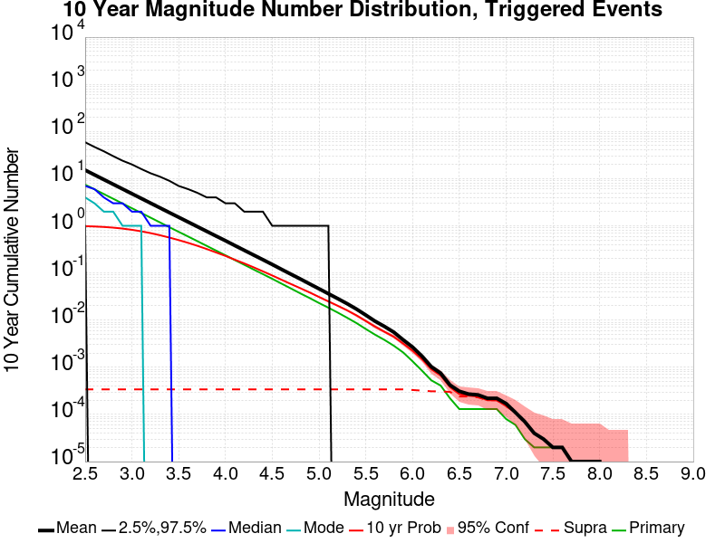
| Mag | Mean | 2.5 %ile | 97.5 %ile | Median | Mode | 10 yr Probability | 10 yr Prob 95% Conf | 10 yr Supra-Seis Prob | Primary Aftershocks Mean |
|---|---|---|---|---|---|---|---|---|---|
| M≥2.5 | 15.168 | 1.000 | 59.000 | 7.000 | 4.000 | 0.982 (98.24%) | [98.15% 98.32%] | 3.40E-4 (0.03%) | 7.467 |
| M≥2.6 | 12.043 | 0.000 | 47.000 | 6.000 | 3.000 | 0.968 (96.79%) | [96.68% 96.90%] | 3.40E-4 (0.03%) | 5.934 |
| M≥2.7 | 9.557 | 0.000 | 38.000 | 4.000 | 2.000 | 0.945 (94.55%) | [94.41% 94.69%] | 3.40E-4 (0.03%) | 4.709 |
| M≥2.8 | 7.596 | 0.000 | 30.000 | 3.000 | 2.000 | 0.914 (91.45%) | [91.27% 91.62%] | 3.40E-4 (0.03%) | 3.743 |
| M≥2.9 | 6.034 | 0.000 | 24.000 | 3.000 | 1.000 | 0.873 (87.34%) | [87.14% 87.55%] | 3.40E-4 (0.03%) | 2.971 |
| M≥3 | 4.793 | 0.000 | 20.000 | 2.000 | 1.000 | 0.822 (82.21%) | [81.97% 82.45%] | 3.40E-4 (0.03%) | 2.359 |
| M≥3.1 | 3.808 | 0.000 | 16.000 | 2.000 | 1.000 | 0.764 (76.42%) | [76.15% 76.68%] | 3.40E-4 (0.03%) | 1.873 |
| M≥3.2 | 3.024 | 0.000 | 13.000 | 1.000 | 0.000 | 0.700 (69.95%) | [69.66% 70.23%] | 3.40E-4 (0.03%) | 1.487 |
| M≥3.3 | 2.402 | 0.000 | 11.000 | 1.000 | 0.000 | 0.631 (63.14%) | [62.84% 63.44%] | 3.40E-4 (0.03%) | 1.180 |
| M≥3.4 | 1.908 | 0.000 | 9.000 | 1.000 | 0.000 | 0.563 (56.35%) | [56.04% 56.66%] | 3.40E-4 (0.03%) | 0.936 |
| M≥3.5 | 1.518 | 0.000 | 7.000 | 0.000 | 0.000 | 0.498 (49.77%) | [49.46% 50.08%] | 3.40E-4 (0.03%) | 0.745 |
| M≥3.6 | 1.208 | 0.000 | 6.000 | 0.000 | 0.000 | 0.435 (43.53%) | [43.23% 43.84%] | 3.40E-4 (0.03%) | 0.594 |
| M≥3.7 | 0.960 | 0.000 | 5.000 | 0.000 | 0.000 | 0.376 (37.63%) | [37.33% 37.93%] | 3.40E-4 (0.03%) | 0.472 |
| M≥3.8 | 0.762 | 0.000 | 4.000 | 0.000 | 0.000 | 0.322 (32.17%) | [31.88% 32.46%] | 3.40E-4 (0.03%) | 0.375 |
| M≥3.9 | 0.606 | 0.000 | 4.000 | 0.000 | 0.000 | 0.272 (27.20%) | [26.92% 27.47%] | 3.40E-4 (0.03%) | 0.297 |
| M≥4 | 0.483 | 0.000 | 3.000 | 0.000 | 0.000 | 0.230 (22.97%) | [22.71% 23.23%] | 3.40E-4 (0.03%) | 0.237 |
| M≥4.1 | 0.382 | 0.000 | 3.000 | 0.000 | 0.000 | 0.191 (19.11%) | [18.87% 19.35%] | 3.40E-4 (0.03%) | 0.188 |
| M≥4.2 | 0.303 | 0.000 | 2.000 | 0.000 | 0.000 | 0.160 (15.97%) | [15.74% 16.20%] | 3.40E-4 (0.03%) | 0.149 |
| M≥4.3 | 0.241 | 0.000 | 2.000 | 0.000 | 0.000 | 0.132 (13.21%) | [13.00% 13.42%] | 3.40E-4 (0.03%) | 0.119 |
| M≥4.4 | 0.191 | 0.000 | 2.000 | 0.000 | 0.000 | 0.108 (10.82%) | [10.63% 11.02%] | 3.40E-4 (0.03%) | 0.095 |
| M≥4.5 | 0.151 | 0.000 | 1.000 | 0.000 | 0.000 | 0.088 (8.85%) | [8.67% 9.02%] | 3.40E-4 (0.03%) | 0.075 |
| M≥4.6 | 0.119 | 0.000 | 1.000 | 0.000 | 0.000 | 0.072 (7.17%) | [7.01% 7.34%] | 3.40E-4 (0.03%) | 0.059 |
| M≥4.7 | 0.094 | 0.000 | 1.000 | 0.000 | 0.000 | 0.058 (5.82%) | [5.68% 5.97%] | 3.40E-4 (0.03%) | 0.047 |
| M≥4.8 | 0.075 | 0.000 | 1.000 | 0.000 | 0.000 | 0.048 (4.76%) | [4.63% 4.89%] | 3.40E-4 (0.03%) | 0.037 |
| M≥4.9 | 0.059 | 0.000 | 1.000 | 0.000 | 0.000 | 0.039 (3.86%) | [3.74% 3.98%] | 3.40E-4 (0.03%) | 0.029 |
| M≥5 | 0.046 | 0.000 | 1.000 | 0.000 | 0.000 | 0.031 (3.09%) | [2.99% 3.20%] | 3.40E-4 (0.03%) | 0.023 |
| M≥5.1 | 0.036 | 0.000 | 1.000 | 0.000 | 0.000 | 0.025 (2.50%) | [2.41% 2.60%] | 3.40E-4 (0.03%) | 0.018 |
| M≥5.2 | 0.029 | 0.000 | 0.000 | 0.000 | 0.000 | 0.020 (2.01%) | [1.93% 2.10%] | 3.40E-4 (0.03%) | 0.014 |
| M≥5.3 | 0.022 | 0.000 | 0.000 | 0.000 | 0.000 | 0.016 (1.62%) | [1.54% 1.70%] | 3.40E-4 (0.03%) | 0.011 |
| M≥5.4 | 0.017 | 0.000 | 0.000 | 0.000 | 0.000 | 0.013 (1.26%) | [1.20% 1.33%] | 3.40E-4 (0.03%) | 8.67E-3 |
| M≥5.5 | 0.013 | 0.000 | 0.000 | 0.000 | 0.000 | 9.56E-3 (0.96%) | [0.90% 1.02%] | 3.40E-4 (0.03%) | 6.48E-3 |
| M≥5.6 | 9.46E-3 | 0.000 | 0.000 | 0.000 | 0.000 | 7.27E-3 (0.73%) | [0.68% 0.78%] | 3.40E-4 (0.03%) | 4.90E-3 |
| M≥5.7 | 7.33E-3 | 0.000 | 0.000 | 0.000 | 0.000 | 5.66E-3 (0.57%) | [0.52% 0.61%] | 3.40E-4 (0.03%) | 3.80E-3 |
| M≥5.8 | 5.54E-3 | 0.000 | 0.000 | 0.000 | 0.000 | 4.43E-3 (0.44%) | [0.40% 0.49%] | 3.40E-4 (0.03%) | 2.86E-3 |
| M≥5.9 | 3.81E-3 | 0.000 | 0.000 | 0.000 | 0.000 | 3.18E-3 (0.32%) | [0.28% 0.36%] | 3.40E-4 (0.03%) | 2.06E-3 |
| M≥6 | 2.68E-3 | 0.000 | 0.000 | 0.000 | 0.000 | 2.25E-3 (0.22%) | [0.20% 0.26%] | 3.30E-4 (0.03%) | 1.34E-3 |
| M≥6.1 | 1.73E-3 | 0.000 | 0.000 | 0.000 | 0.000 | 1.49E-3 (0.15%) | [0.13% 0.18%] | 3.20E-4 (0.03%) | 8.50E-4 |
| M≥6.2 | 1.03E-3 | 0.000 | 0.000 | 0.000 | 0.000 | 9.10E-4 (0.09%) | [0.07% 0.11%] | 3.10E-4 (0.03%) | 5.30E-4 |
| M≥6.3 | 7.50E-4 | 0.000 | 0.000 | 0.000 | 0.000 | 6.70E-4 (0.07%) | [0.05% 0.09%] | 3.10E-4 (0.03%) | 4.10E-4 |
| M≥6.4 | 4.20E-4 | 0.000 | 0.000 | 0.000 | 0.000 | 3.80E-4 (0.04%) | [0.03% 0.05%] | 3.00E-4 (0.03%) | 2.20E-4 |
| M≥6.5 | 3.10E-4 | 0.000 | 0.000 | 0.000 | 0.000 | 2.70E-4 (0.03%) | [0.02% 0.04%] | 2.40E-4 (0.02%) | 1.30E-4 |
| M≥6.6 | 2.70E-4 | 0.000 | 0.000 | 0.000 | 0.000 | 2.50E-4 (0.03%) | [0.02% 0.04%] | 2.40E-4 (0.02%) | 1.30E-4 |
| M≥6.7 | 2.60E-4 | 0.000 | 0.000 | 0.000 | 0.000 | 2.40E-4 (0.02%) | [0.02% 0.04%] | 2.30E-4 (0.02%) | 1.30E-4 |
| M≥6.8 | 2.20E-4 | 0.000 | 0.000 | 0.000 | 0.000 | 2.00E-4 (0.02%) | [0.01% 0.03%] | 2.00E-4 (0.02%) | 1.30E-4 |
| M≥6.9 | 2.20E-4 | 0.000 | 0.000 | 0.000 | 0.000 | 2.00E-4 (0.02%) | [0.01% 0.03%] | 2.00E-4 (0.02%) | 1.30E-4 |
| M≥7 | 1.70E-4 | 0.000 | 0.000 | 0.000 | 0.000 | 1.50E-4 (0.01%) | [0.01% 0.03%] | 1.50E-4 (0.01%) | 8.00E-5 |
| M≥7.1 | 1.10E-4 | 0.000 | 0.000 | 0.000 | 0.000 | 1.10E-4 (0.01%) | [0.01% 0.02%] | 1.10E-4 (0.01%) | 6.00E-5 |
| M≥7.2 | 7.00E-5 | 0.000 | 0.000 | 0.000 | 0.000 | 7.00E-5 (0.01%) | [0.00% 0.02%] | 7.00E-5 (0.01%) | 3.00E-5 |
| M≥7.3 | 4.00E-5 | 0.000 | 0.000 | 0.000 | 0.000 | 4.00E-5 (0.00%) | [0.00% 0.01%] | 4.00E-5 (0.00%) | 2.00E-5 |
| M≥7.4 | 3.00E-5 | 0.000 | 0.000 | 0.000 | 0.000 | 3.00E-5 (0.00%) | [0.00% 0.01%] | 3.00E-5 (0.00%) | 2.00E-5 |
| M≥7.5 | 2.00E-5 | 0.000 | 0.000 | 0.000 | 0.000 | 2.00E-5 (0.00%) | [0.00% 0.01%] | 2.00E-5 (0.00%) | 2.00E-5 |
| M≥7.6 | 2.00E-5 | 0.000 | 0.000 | 0.000 | 0.000 | 2.00E-5 (0.00%) | [0.00% 0.01%] | 2.00E-5 (0.00%) | 2.00E-5 |
| M≥7.7 | 1.00E-5 | 0.000 | 0.000 | 0.000 | 0.000 | 1.00E-5 (0.00%) | [0.00% 0.01%] | 1.00E-5 (0.00%) | 1.00E-5 |
| M≥7.8 | 1.00E-5 | 0.000 | 0.000 | 0.000 | 0.000 | 1.00E-5 (0.00%) | [0.00% 0.01%] | 1.00E-5 (0.00%) | 1.00E-5 |
| M≥7.9 | 1.00E-5 | 0.000 | 0.000 | 0.000 | 0.000 | 1.00E-5 (0.00%) | [0.00% 0.01%] | 1.00E-5 (0.00%) | 1.00E-5 |
| M≥8 | 1.00E-5 | 0.000 | 0.000 | 0.000 | 0.000 | 1.00E-5 (0.00%) | [0.00% 0.01%] | 1.00E-5 (0.00%) | 1.00E-5 |
| M≥8.1 | 0.000 | 0.000 | 0.000 | 0.000 | 0.000 | 0.000 (0.00%) | [0.00% 0.00%] | 0.000 (0.00%) | 0.000 |
| M≥8.2 | 0.000 | 0.000 | 0.000 | 0.000 | 0.000 | 0.000 (0.00%) | [0.00% 0.00%] | 0.000 (0.00%) | 0.000 |
| M≥8.3 | 0.000 | 0.000 | 0.000 | 0.000 | 0.000 | 0.000 (0.00%) | [0.00% 0.00%] | 0.000 (0.00%) | 0.000 |
| M≥8.4 | 0.000 | 0.000 | 0.000 | 0.000 | 0.000 | 0.000 (0.00%) | [0.00% 0.00%] | 0.000 (0.00%) | 0.000 |
| M≥8.5 | 0.000 | 0.000 | 0.000 | 0.000 | 0.000 | 0.000 (0.00%) | [0.00% 0.00%] | 0.000 (0.00%) | 0.000 |
| M≥8.6 | 0.000 | 0.000 | 0.000 | 0.000 | 0.000 | 0.000 (0.00%) | [0.00% 0.00%] | 0.000 (0.00%) | 0.000 |
| M≥8.7 | 0.000 | 0.000 | 0.000 | 0.000 | 0.000 | 0.000 (0.00%) | [0.00% 0.00%] | 0.000 (0.00%) | 0.000 |
| M≥8.8 | 0.000 | 0.000 | 0.000 | 0.000 | 0.000 | 0.000 (0.00%) | [0.00% 0.00%] | 0.000 (0.00%) | 0.000 |
| M≥8.9 | 0.000 | 0.000 | 0.000 | 0.000 | 0.000 | 0.000 (0.00%) | [0.00% 0.00%] | 0.000 (0.00%) | 0.000 |
| M≥9 | 0.000 | 0.000 | 0.000 | 0.000 | 0.000 | 0.000 (0.00%) | [0.00% 0.00%] | 0.000 (0.00%) | 0.000 |
Legend
| Mag | Mean | 2.5 %ile | 97.5 %ile | Median | Mode | 1 yr Probability | 1 yr Prob 95% Conf | 1 yr Supra-Seis Prob | Primary Aftershocks Mean |
|---|---|---|---|---|---|---|---|---|---|
| M≥2.5 | 9.736 | 0.000 | 37.000 | 5.000 | 3.000 | 0.959 (95.88%) | [95.76% 96.00%] | 1.80E-4 (0.02%) | 5.359 |
| M≥2.6 | 7.730 | 0.000 | 29.000 | 4.000 | 2.000 | 0.932 (93.22%) | [93.06% 93.38%] | 1.80E-4 (0.02%) | 4.259 |
| M≥2.7 | 6.133 | 0.000 | 24.000 | 3.000 | 1.000 | 0.896 (89.61%) | [89.42% 89.80%] | 1.80E-4 (0.02%) | 3.380 |
| M≥2.8 | 4.876 | 0.000 | 19.000 | 2.000 | 1.000 | 0.850 (84.96%) | [84.73% 85.18%] | 1.80E-4 (0.02%) | 2.689 |
| M≥2.9 | 3.871 | 0.000 | 16.000 | 2.000 | 1.000 | 0.794 (79.42%) | [79.17% 79.67%] | 1.80E-4 (0.02%) | 2.133 |
| M≥3 | 3.075 | 0.000 | 13.000 | 1.000 | 0.000 | 0.732 (73.16%) | [72.89% 73.44%] | 1.80E-4 (0.02%) | 1.694 |
| M≥3.1 | 2.441 | 0.000 | 10.000 | 1.000 | 0.000 | 0.664 (66.42%) | [66.13% 66.72%] | 1.80E-4 (0.02%) | 1.344 |
| M≥3.2 | 1.938 | 0.000 | 9.000 | 1.000 | 0.000 | 0.595 (59.53%) | [59.23% 59.84%] | 1.80E-4 (0.02%) | 1.068 |
| M≥3.3 | 1.539 | 0.000 | 7.000 | 1.000 | 0.000 | 0.526 (52.58%) | [52.27% 52.89%] | 1.80E-4 (0.02%) | 0.847 |
| M≥3.4 | 1.221 | 0.000 | 6.000 | 0.000 | 0.000 | 0.460 (45.98%) | [45.67% 46.29%] | 1.80E-4 (0.02%) | 0.672 |
| M≥3.5 | 0.971 | 0.000 | 5.000 | 0.000 | 0.000 | 0.399 (39.92%) | [39.62% 40.22%] | 1.80E-4 (0.02%) | 0.535 |
| M≥3.6 | 0.773 | 0.000 | 4.000 | 0.000 | 0.000 | 0.343 (34.33%) | [34.04% 34.63%] | 1.80E-4 (0.02%) | 0.427 |
| M≥3.7 | 0.615 | 0.000 | 3.000 | 0.000 | 0.000 | 0.291 (29.12%) | [28.83% 29.40%] | 1.80E-4 (0.02%) | 0.339 |
| M≥3.8 | 0.488 | 0.000 | 3.000 | 0.000 | 0.000 | 0.245 (24.47%) | [24.21% 24.74%] | 1.80E-4 (0.02%) | 0.270 |
| M≥3.9 | 0.388 | 0.000 | 3.000 | 0.000 | 0.000 | 0.204 (20.45%) | [20.20% 20.70%] | 1.80E-4 (0.02%) | 0.214 |
| M≥4 | 0.309 | 0.000 | 2.000 | 0.000 | 0.000 | 0.171 (17.05%) | [16.82% 17.29%] | 1.80E-4 (0.02%) | 0.171 |
| M≥4.1 | 0.245 | 0.000 | 2.000 | 0.000 | 0.000 | 0.140 (13.98%) | [13.77% 14.20%] | 1.80E-4 (0.02%) | 0.135 |
| M≥4.2 | 0.195 | 0.000 | 2.000 | 0.000 | 0.000 | 0.116 (11.58%) | [11.38% 11.78%] | 1.80E-4 (0.02%) | 0.108 |
| M≥4.3 | 0.155 | 0.000 | 1.000 | 0.000 | 0.000 | 0.095 (9.51%) | [9.33% 9.70%] | 1.80E-4 (0.02%) | 0.086 |
| M≥4.4 | 0.123 | 0.000 | 1.000 | 0.000 | 0.000 | 0.077 (7.74%) | [7.58% 7.91%] | 1.80E-4 (0.02%) | 0.068 |
| M≥4.5 | 0.098 | 0.000 | 1.000 | 0.000 | 0.000 | 0.063 (6.28%) | [6.13% 6.43%] | 1.80E-4 (0.02%) | 0.054 |
| M≥4.6 | 0.077 | 0.000 | 1.000 | 0.000 | 0.000 | 0.051 (5.07%) | [4.93% 5.21%] | 1.80E-4 (0.02%) | 0.043 |
| M≥4.7 | 0.061 | 0.000 | 1.000 | 0.000 | 0.000 | 0.041 (4.09%) | [3.97% 4.22%] | 1.80E-4 (0.02%) | 0.034 |
| M≥4.8 | 0.048 | 0.000 | 1.000 | 0.000 | 0.000 | 0.033 (3.34%) | [3.23% 3.45%] | 1.80E-4 (0.02%) | 0.027 |
| M≥4.9 | 0.038 | 0.000 | 1.000 | 0.000 | 0.000 | 0.027 (2.70%) | [2.60% 2.81%] | 1.80E-4 (0.02%) | 0.021 |
| M≥5 | 0.030 | 0.000 | 0.000 | 0.000 | 0.000 | 0.022 (2.16%) | [2.07% 2.25%] | 1.80E-4 (0.02%) | 0.017 |
| M≥5.1 | 0.023 | 0.000 | 0.000 | 0.000 | 0.000 | 0.017 (1.72%) | [1.64% 1.81%] | 1.80E-4 (0.02%) | 0.013 |
| M≥5.2 | 0.019 | 0.000 | 0.000 | 0.000 | 0.000 | 0.014 (1.39%) | [1.32% 1.47%] | 1.80E-4 (0.02%) | 0.010 |
| M≥5.3 | 0.014 | 0.000 | 0.000 | 0.000 | 0.000 | 0.011 (1.11%) | [1.04% 1.17%] | 1.80E-4 (0.02%) | 7.98E-3 |
| M≥5.4 | 0.011 | 0.000 | 0.000 | 0.000 | 0.000 | 8.63E-3 (0.86%) | [0.81% 0.92%] | 1.80E-4 (0.02%) | 6.11E-3 |
| M≥5.5 | 8.21E-3 | 0.000 | 0.000 | 0.000 | 0.000 | 6.37E-3 (0.64%) | [0.59% 0.69%] | 1.80E-4 (0.02%) | 4.45E-3 |
| M≥5.6 | 6.04E-3 | 0.000 | 0.000 | 0.000 | 0.000 | 4.80E-3 (0.48%) | [0.44% 0.53%] | 1.80E-4 (0.02%) | 3.37E-3 |
| M≥5.7 | 4.74E-3 | 0.000 | 0.000 | 0.000 | 0.000 | 3.78E-3 (0.38%) | [0.34% 0.42%] | 1.80E-4 (0.02%) | 2.61E-3 |
| M≥5.8 | 3.60E-3 | 0.000 | 0.000 | 0.000 | 0.000 | 2.92E-3 (0.29%) | [0.26% 0.33%] | 1.80E-4 (0.02%) | 1.95E-3 |
| M≥5.9 | 2.50E-3 | 0.000 | 0.000 | 0.000 | 0.000 | 2.10E-3 (0.21%) | [0.18% 0.24%] | 1.80E-4 (0.02%) | 1.42E-3 |
| M≥6 | 1.77E-3 | 0.000 | 0.000 | 0.000 | 0.000 | 1.48E-3 (0.15%) | [0.13% 0.17%] | 1.80E-4 (0.02%) | 9.20E-4 |
| M≥6.1 | 1.18E-3 | 0.000 | 0.000 | 0.000 | 0.000 | 1.00E-3 (0.10%) | [0.08% 0.12%] | 1.70E-4 (0.02%) | 5.90E-4 |
| M≥6.2 | 6.40E-4 | 0.000 | 0.000 | 0.000 | 0.000 | 5.60E-4 (0.06%) | [0.04% 0.07%] | 1.60E-4 (0.02%) | 3.30E-4 |
| M≥6.3 | 4.50E-4 | 0.000 | 0.000 | 0.000 | 0.000 | 4.10E-4 (0.04%) | [0.03% 0.06%] | 1.60E-4 (0.02%) | 2.40E-4 |
| M≥6.4 | 2.30E-4 | 0.000 | 0.000 | 0.000 | 0.000 | 2.00E-4 (0.02%) | [0.01% 0.03%] | 1.50E-4 (0.01%) | 1.30E-4 |
| M≥6.5 | 1.70E-4 | 0.000 | 0.000 | 0.000 | 0.000 | 1.40E-4 (0.01%) | [0.01% 0.02%] | 1.20E-4 (0.01%) | 7.00E-5 |
| M≥6.6 | 1.40E-4 | 0.000 | 0.000 | 0.000 | 0.000 | 1.30E-4 (0.01%) | [0.01% 0.02%] | 1.20E-4 (0.01%) | 7.00E-5 |
| M≥6.7 | 1.30E-4 | 0.000 | 0.000 | 0.000 | 0.000 | 1.20E-4 (0.01%) | [0.01% 0.02%] | 1.10E-4 (0.01%) | 7.00E-5 |
| M≥6.8 | 9.00E-5 | 0.000 | 0.000 | 0.000 | 0.000 | 8.00E-5 (0.01%) | [0.00% 0.02%] | 8.00E-5 (0.01%) | 7.00E-5 |
| M≥6.9 | 9.00E-5 | 0.000 | 0.000 | 0.000 | 0.000 | 8.00E-5 (0.01%) | [0.00% 0.02%] | 8.00E-5 (0.01%) | 7.00E-5 |
| M≥7 | 6.00E-5 | 0.000 | 0.000 | 0.000 | 0.000 | 5.00E-5 (0.01%) | [0.00% 0.01%] | 5.00E-5 (0.01%) | 4.00E-5 |
| M≥7.1 | 4.00E-5 | 0.000 | 0.000 | 0.000 | 0.000 | 4.00E-5 (0.00%) | [0.00% 0.01%] | 4.00E-5 (0.00%) | 2.00E-5 |
| M≥7.2 | 2.00E-5 | 0.000 | 0.000 | 0.000 | 0.000 | 2.00E-5 (0.00%) | [0.00% 0.01%] | 2.00E-5 (0.00%) | 1.00E-5 |
| M≥7.3 | 1.00E-5 | 0.000 | 0.000 | 0.000 | 0.000 | 1.00E-5 (0.00%) | [0.00% 0.01%] | 1.00E-5 (0.00%) | 1.00E-5 |
| M≥7.4 | 1.00E-5 | 0.000 | 0.000 | 0.000 | 0.000 | 1.00E-5 (0.00%) | [0.00% 0.01%] | 1.00E-5 (0.00%) | 1.00E-5 |
| M≥7.5 | 1.00E-5 | 0.000 | 0.000 | 0.000 | 0.000 | 1.00E-5 (0.00%) | [0.00% 0.01%] | 1.00E-5 (0.00%) | 1.00E-5 |
| M≥7.6 | 1.00E-5 | 0.000 | 0.000 | 0.000 | 0.000 | 1.00E-5 (0.00%) | [0.00% 0.01%] | 1.00E-5 (0.00%) | 1.00E-5 |
| M≥7.7 | 1.00E-5 | 0.000 | 0.000 | 0.000 | 0.000 | 1.00E-5 (0.00%) | [0.00% 0.01%] | 1.00E-5 (0.00%) | 1.00E-5 |
| M≥7.8 | 1.00E-5 | 0.000 | 0.000 | 0.000 | 0.000 | 1.00E-5 (0.00%) | [0.00% 0.01%] | 1.00E-5 (0.00%) | 1.00E-5 |
| M≥7.9 | 1.00E-5 | 0.000 | 0.000 | 0.000 | 0.000 | 1.00E-5 (0.00%) | [0.00% 0.01%] | 1.00E-5 (0.00%) | 1.00E-5 |
| M≥8 | 1.00E-5 | 0.000 | 0.000 | 0.000 | 0.000 | 1.00E-5 (0.00%) | [0.00% 0.01%] | 1.00E-5 (0.00%) | 1.00E-5 |
| M≥8.1 | 0.000 | 0.000 | 0.000 | 0.000 | 0.000 | 0.000 (0.00%) | [0.00% 0.00%] | 0.000 (0.00%) | 0.000 |
| M≥8.2 | 0.000 | 0.000 | 0.000 | 0.000 | 0.000 | 0.000 (0.00%) | [0.00% 0.00%] | 0.000 (0.00%) | 0.000 |
| M≥8.3 | 0.000 | 0.000 | 0.000 | 0.000 | 0.000 | 0.000 (0.00%) | [0.00% 0.00%] | 0.000 (0.00%) | 0.000 |
| M≥8.4 | 0.000 | 0.000 | 0.000 | 0.000 | 0.000 | 0.000 (0.00%) | [0.00% 0.00%] | 0.000 (0.00%) | 0.000 |
| M≥8.5 | 0.000 | 0.000 | 0.000 | 0.000 | 0.000 | 0.000 (0.00%) | [0.00% 0.00%] | 0.000 (0.00%) | 0.000 |
| M≥8.6 | 0.000 | 0.000 | 0.000 | 0.000 | 0.000 | 0.000 (0.00%) | [0.00% 0.00%] | 0.000 (0.00%) | 0.000 |
| M≥8.7 | 0.000 | 0.000 | 0.000 | 0.000 | 0.000 | 0.000 (0.00%) | [0.00% 0.00%] | 0.000 (0.00%) | 0.000 |
| M≥8.8 | 0.000 | 0.000 | 0.000 | 0.000 | 0.000 | 0.000 (0.00%) | [0.00% 0.00%] | 0.000 (0.00%) | 0.000 |
| M≥8.9 | 0.000 | 0.000 | 0.000 | 0.000 | 0.000 | 0.000 (0.00%) | [0.00% 0.00%] | 0.000 (0.00%) | 0.000 |
| M≥9 | 0.000 | 0.000 | 0.000 | 0.000 | 0.000 | 0.000 (0.00%) | [0.00% 0.00%] | 0.000 (0.00%) | 0.000 |
Legend

| Mag | Mean | 2.5 %ile | 97.5 %ile | Median | Mode | 1 mo Probability | 1 mo Prob 95% Conf | 1 mo Supra-Seis Prob | Primary Aftershocks Mean |
|---|---|---|---|---|---|---|---|---|---|
| M≥2.5 | 4.429 | 0.000 | 16.000 | 2.000 | 1.000 | 0.855 (85.50%) | [85.28% 85.72%] | 7.00E-5 (0.01%) | 2.781 |
| M≥2.6 | 3.516 | 0.000 | 13.000 | 2.000 | 1.000 | 0.801 (80.06%) | [79.81% 80.30%] | 7.00E-5 (0.01%) | 2.210 |
| M≥2.7 | 2.788 | 0.000 | 11.000 | 1.000 | 0.000 | 0.738 (73.77%) | [73.50% 74.05%] | 7.00E-5 (0.01%) | 1.753 |
| M≥2.8 | 2.216 | 0.000 | 9.000 | 1.000 | 0.000 | 0.670 (66.96%) | [66.67% 67.25%] | 7.00E-5 (0.01%) | 1.394 |
| M≥2.9 | 1.757 | 0.000 | 7.000 | 1.000 | 0.000 | 0.599 (59.89%) | [59.59% 60.20%] | 7.00E-5 (0.01%) | 1.105 |
| M≥3 | 1.395 | 0.000 | 6.000 | 1.000 | 0.000 | 0.529 (52.89%) | [52.58% 53.20%] | 7.00E-5 (0.01%) | 0.878 |
| M≥3.1 | 1.109 | 0.000 | 5.000 | 0.000 | 0.000 | 0.461 (46.13%) | [45.83% 46.44%] | 7.00E-5 (0.01%) | 0.698 |
| M≥3.2 | 0.882 | 0.000 | 4.000 | 0.000 | 0.000 | 0.398 (39.83%) | [39.52% 40.13%] | 7.00E-5 (0.01%) | 0.555 |
| M≥3.3 | 0.701 | 0.000 | 4.000 | 0.000 | 0.000 | 0.340 (33.95%) | [33.66% 34.25%] | 7.00E-5 (0.01%) | 0.440 |
| M≥3.4 | 0.555 | 0.000 | 3.000 | 0.000 | 0.000 | 0.287 (28.68%) | [28.40% 28.96%] | 7.00E-5 (0.01%) | 0.348 |
| M≥3.5 | 0.440 | 0.000 | 3.000 | 0.000 | 0.000 | 0.241 (24.14%) | [23.88% 24.41%] | 7.00E-5 (0.01%) | 0.277 |
| M≥3.6 | 0.351 | 0.000 | 2.000 | 0.000 | 0.000 | 0.202 (20.25%) | [20.00% 20.50%] | 7.00E-5 (0.01%) | 0.222 |
| M≥3.7 | 0.279 | 0.000 | 2.000 | 0.000 | 0.000 | 0.168 (16.78%) | [16.55% 17.01%] | 7.00E-5 (0.01%) | 0.176 |
| M≥3.8 | 0.221 | 0.000 | 2.000 | 0.000 | 0.000 | 0.138 (13.81%) | [13.60% 14.03%] | 7.00E-5 (0.01%) | 0.140 |
| M≥3.9 | 0.176 | 0.000 | 1.000 | 0.000 | 0.000 | 0.113 (11.28%) | [11.09% 11.48%] | 7.00E-5 (0.01%) | 0.111 |
| M≥4 | 0.140 | 0.000 | 1.000 | 0.000 | 0.000 | 0.092 (9.25%) | [9.07% 9.43%] | 7.00E-5 (0.01%) | 0.089 |
| M≥4.1 | 0.111 | 0.000 | 1.000 | 0.000 | 0.000 | 0.075 (7.48%) | [7.32% 7.64%] | 7.00E-5 (0.01%) | 0.070 |
| M≥4.2 | 0.088 | 0.000 | 1.000 | 0.000 | 0.000 | 0.061 (6.11%) | [5.96% 6.26%] | 7.00E-5 (0.01%) | 0.056 |
| M≥4.3 | 0.070 | 0.000 | 1.000 | 0.000 | 0.000 | 0.049 (4.92%) | [4.79% 5.06%] | 7.00E-5 (0.01%) | 0.045 |
| M≥4.4 | 0.056 | 0.000 | 1.000 | 0.000 | 0.000 | 0.040 (4.01%) | [3.89% 4.14%] | 7.00E-5 (0.01%) | 0.036 |
| M≥4.5 | 0.044 | 0.000 | 1.000 | 0.000 | 0.000 | 0.032 (3.21%) | [3.10% 3.32%] | 7.00E-5 (0.01%) | 0.028 |
| M≥4.6 | 0.035 | 0.000 | 1.000 | 0.000 | 0.000 | 0.026 (2.58%) | [2.48% 2.68%] | 7.00E-5 (0.01%) | 0.023 |
| M≥4.7 | 0.028 | 0.000 | 0.000 | 0.000 | 0.000 | 0.021 (2.08%) | [2.00% 2.18%] | 7.00E-5 (0.01%) | 0.018 |
| M≥4.8 | 0.022 | 0.000 | 0.000 | 0.000 | 0.000 | 0.017 (1.68%) | [1.60% 1.76%] | 7.00E-5 (0.01%) | 0.014 |
| M≥4.9 | 0.018 | 0.000 | 0.000 | 0.000 | 0.000 | 0.014 (1.37%) | [1.30% 1.45%] | 7.00E-5 (0.01%) | 0.011 |
| M≥5 | 0.014 | 0.000 | 0.000 | 0.000 | 0.000 | 0.011 (1.10%) | [1.03% 1.17%] | 7.00E-5 (0.01%) | 8.88E-3 |
| M≥5.1 | 0.011 | 0.000 | 0.000 | 0.000 | 0.000 | 8.66E-3 (0.87%) | [0.81% 0.93%] | 7.00E-5 (0.01%) | 7.07E-3 |
| M≥5.2 | 8.68E-3 | 0.000 | 0.000 | 0.000 | 0.000 | 6.92E-3 (0.69%) | [0.64% 0.75%] | 7.00E-5 (0.01%) | 5.48E-3 |
| M≥5.3 | 6.55E-3 | 0.000 | 0.000 | 0.000 | 0.000 | 5.38E-3 (0.54%) | [0.49% 0.59%] | 7.00E-5 (0.01%) | 4.19E-3 |
| M≥5.4 | 4.91E-3 | 0.000 | 0.000 | 0.000 | 0.000 | 4.13E-3 (0.41%) | [0.37% 0.46%] | 7.00E-5 (0.01%) | 3.12E-3 |
| M≥5.5 | 3.60E-3 | 0.000 | 0.000 | 0.000 | 0.000 | 3.00E-3 (0.30%) | [0.27% 0.34%] | 7.00E-5 (0.01%) | 2.29E-3 |
| M≥5.6 | 2.65E-3 | 0.000 | 0.000 | 0.000 | 0.000 | 2.25E-3 (0.22%) | [0.20% 0.26%] | 7.00E-5 (0.01%) | 1.72E-3 |
| M≥5.7 | 2.08E-3 | 0.000 | 0.000 | 0.000 | 0.000 | 1.72E-3 (0.17%) | [0.15% 0.20%] | 7.00E-5 (0.01%) | 1.29E-3 |
| M≥5.8 | 1.60E-3 | 0.000 | 0.000 | 0.000 | 0.000 | 1.33E-3 (0.13%) | [0.11% 0.16%] | 7.00E-5 (0.01%) | 9.70E-4 |
| M≥5.9 | 1.07E-3 | 0.000 | 0.000 | 0.000 | 0.000 | 9.40E-4 (0.09%) | [0.08% 0.12%] | 7.00E-5 (0.01%) | 6.70E-4 |
| M≥6 | 7.40E-4 | 0.000 | 0.000 | 0.000 | 0.000 | 6.40E-4 (0.06%) | [0.05% 0.08%] | 7.00E-5 (0.01%) | 4.40E-4 |
| M≥6.1 | 5.20E-4 | 0.000 | 0.000 | 0.000 | 0.000 | 4.50E-4 (0.04%) | [0.03% 0.06%] | 7.00E-5 (0.01%) | 3.10E-4 |
| M≥6.2 | 2.60E-4 | 0.000 | 0.000 | 0.000 | 0.000 | 2.30E-4 (0.02%) | [0.01% 0.04%] | 6.00E-5 (0.01%) | 1.60E-4 |
| M≥6.3 | 1.70E-4 | 0.000 | 0.000 | 0.000 | 0.000 | 1.50E-4 (0.01%) | [0.01% 0.03%] | 6.00E-5 (0.01%) | 1.00E-4 |
| M≥6.4 | 9.00E-5 | 0.000 | 0.000 | 0.000 | 0.000 | 7.00E-5 (0.01%) | [0.00% 0.02%] | 5.00E-5 (0.01%) | 6.00E-5 |
| M≥6.5 | 6.00E-5 | 0.000 | 0.000 | 0.000 | 0.000 | 4.00E-5 (0.00%) | [0.00% 0.01%] | 4.00E-5 (0.00%) | 3.00E-5 |
| M≥6.6 | 4.00E-5 | 0.000 | 0.000 | 0.000 | 0.000 | 4.00E-5 (0.00%) | [0.00% 0.01%] | 4.00E-5 (0.00%) | 3.00E-5 |
| M≥6.7 | 4.00E-5 | 0.000 | 0.000 | 0.000 | 0.000 | 4.00E-5 (0.00%) | [0.00% 0.01%] | 4.00E-5 (0.00%) | 3.00E-5 |
| M≥6.8 | 3.00E-5 | 0.000 | 0.000 | 0.000 | 0.000 | 3.00E-5 (0.00%) | [0.00% 0.01%] | 3.00E-5 (0.00%) | 3.00E-5 |
| M≥6.9 | 3.00E-5 | 0.000 | 0.000 | 0.000 | 0.000 | 3.00E-5 (0.00%) | [0.00% 0.01%] | 3.00E-5 (0.00%) | 3.00E-5 |
| M≥7 | 1.00E-5 | 0.000 | 0.000 | 0.000 | 0.000 | 1.00E-5 (0.00%) | [0.00% 0.01%] | 1.00E-5 (0.00%) | 1.00E-5 |
| M≥7.1 | 1.00E-5 | 0.000 | 0.000 | 0.000 | 0.000 | 1.00E-5 (0.00%) | [0.00% 0.01%] | 1.00E-5 (0.00%) | 1.00E-5 |
| M≥7.2 | 1.00E-5 | 0.000 | 0.000 | 0.000 | 0.000 | 1.00E-5 (0.00%) | [0.00% 0.01%] | 1.00E-5 (0.00%) | 1.00E-5 |
| M≥7.3 | 1.00E-5 | 0.000 | 0.000 | 0.000 | 0.000 | 1.00E-5 (0.00%) | [0.00% 0.01%] | 1.00E-5 (0.00%) | 1.00E-5 |
| M≥7.4 | 1.00E-5 | 0.000 | 0.000 | 0.000 | 0.000 | 1.00E-5 (0.00%) | [0.00% 0.01%] | 1.00E-5 (0.00%) | 1.00E-5 |
| M≥7.5 | 1.00E-5 | 0.000 | 0.000 | 0.000 | 0.000 | 1.00E-5 (0.00%) | [0.00% 0.01%] | 1.00E-5 (0.00%) | 1.00E-5 |
| M≥7.6 | 1.00E-5 | 0.000 | 0.000 | 0.000 | 0.000 | 1.00E-5 (0.00%) | [0.00% 0.01%] | 1.00E-5 (0.00%) | 1.00E-5 |
| M≥7.7 | 1.00E-5 | 0.000 | 0.000 | 0.000 | 0.000 | 1.00E-5 (0.00%) | [0.00% 0.01%] | 1.00E-5 (0.00%) | 1.00E-5 |
| M≥7.8 | 1.00E-5 | 0.000 | 0.000 | 0.000 | 0.000 | 1.00E-5 (0.00%) | [0.00% 0.01%] | 1.00E-5 (0.00%) | 1.00E-5 |
| M≥7.9 | 1.00E-5 | 0.000 | 0.000 | 0.000 | 0.000 | 1.00E-5 (0.00%) | [0.00% 0.01%] | 1.00E-5 (0.00%) | 1.00E-5 |
| M≥8 | 1.00E-5 | 0.000 | 0.000 | 0.000 | 0.000 | 1.00E-5 (0.00%) | [0.00% 0.01%] | 1.00E-5 (0.00%) | 1.00E-5 |
| M≥8.1 | 0.000 | 0.000 | 0.000 | 0.000 | 0.000 | 0.000 (0.00%) | [0.00% 0.00%] | 0.000 (0.00%) | 0.000 |
| M≥8.2 | 0.000 | 0.000 | 0.000 | 0.000 | 0.000 | 0.000 (0.00%) | [0.00% 0.00%] | 0.000 (0.00%) | 0.000 |
| M≥8.3 | 0.000 | 0.000 | 0.000 | 0.000 | 0.000 | 0.000 (0.00%) | [0.00% 0.00%] | 0.000 (0.00%) | 0.000 |
| M≥8.4 | 0.000 | 0.000 | 0.000 | 0.000 | 0.000 | 0.000 (0.00%) | [0.00% 0.00%] | 0.000 (0.00%) | 0.000 |
| M≥8.5 | 0.000 | 0.000 | 0.000 | 0.000 | 0.000 | 0.000 (0.00%) | [0.00% 0.00%] | 0.000 (0.00%) | 0.000 |
| M≥8.6 | 0.000 | 0.000 | 0.000 | 0.000 | 0.000 | 0.000 (0.00%) | [0.00% 0.00%] | 0.000 (0.00%) | 0.000 |
| M≥8.7 | 0.000 | 0.000 | 0.000 | 0.000 | 0.000 | 0.000 (0.00%) | [0.00% 0.00%] | 0.000 (0.00%) | 0.000 |
| M≥8.8 | 0.000 | 0.000 | 0.000 | 0.000 | 0.000 | 0.000 (0.00%) | [0.00% 0.00%] | 0.000 (0.00%) | 0.000 |
| M≥8.9 | 0.000 | 0.000 | 0.000 | 0.000 | 0.000 | 0.000 (0.00%) | [0.00% 0.00%] | 0.000 (0.00%) | 0.000 |
| M≥9 | 0.000 | 0.000 | 0.000 | 0.000 | 0.000 | 0.000 (0.00%) | [0.00% 0.00%] | 0.000 (0.00%) | 0.000 |
Legend

| Mag | Mean | 2.5 %ile | 97.5 %ile | Median | Mode | 1 wk Probability | 1 wk Prob 95% Conf | 1 wk Supra-Seis Prob | Primary Aftershocks Mean |
|---|---|---|---|---|---|---|---|---|---|
| M≥2.5 | 1.895 | 0.000 | 8.000 | 1.000 | 0.000 | 0.672 (67.17%) | [66.87% 67.46%] | 1.00E-5 (0.00%) | 1.406 |
| M≥2.6 | 1.501 | 0.000 | 7.000 | 1.000 | 0.000 | 0.600 (59.97%) | [59.67% 60.27%] | 1.00E-5 (0.00%) | 1.115 |
| M≥2.7 | 1.189 | 0.000 | 5.000 | 1.000 | 0.000 | 0.529 (52.88%) | [52.57% 53.19%] | 1.00E-5 (0.00%) | 0.884 |
| M≥2.8 | 0.944 | 0.000 | 5.000 | 0.000 | 0.000 | 0.460 (45.97%) | [45.66% 46.28%] | 1.00E-5 (0.00%) | 0.702 |
| M≥2.9 | 0.748 | 0.000 | 4.000 | 0.000 | 0.000 | 0.394 (39.44%) | [39.13% 39.74%] | 1.00E-5 (0.00%) | 0.556 |
| M≥3 | 0.595 | 0.000 | 3.000 | 0.000 | 0.000 | 0.336 (33.63%) | [33.34% 33.93%] | 1.00E-5 (0.00%) | 0.443 |
| M≥3.1 | 0.473 | 0.000 | 3.000 | 0.000 | 0.000 | 0.284 (28.37%) | [28.09% 28.65%] | 1.00E-5 (0.00%) | 0.352 |
| M≥3.2 | 0.376 | 0.000 | 2.000 | 0.000 | 0.000 | 0.237 (23.68%) | [23.42% 23.95%] | 1.00E-5 (0.00%) | 0.280 |
| M≥3.3 | 0.298 | 0.000 | 2.000 | 0.000 | 0.000 | 0.196 (19.62%) | [19.38% 19.87%] | 1.00E-5 (0.00%) | 0.222 |
| M≥3.4 | 0.236 | 0.000 | 2.000 | 0.000 | 0.000 | 0.162 (16.16%) | [15.93% 16.39%] | 1.00E-5 (0.00%) | 0.175 |
| M≥3.5 | 0.187 | 0.000 | 2.000 | 0.000 | 0.000 | 0.133 (13.32%) | [13.11% 13.54%] | 1.00E-5 (0.00%) | 0.139 |
| M≥3.6 | 0.149 | 0.000 | 1.000 | 0.000 | 0.000 | 0.109 (10.86%) | [10.67% 11.05%] | 1.00E-5 (0.00%) | 0.111 |
| M≥3.7 | 0.118 | 0.000 | 1.000 | 0.000 | 0.000 | 0.088 (8.80%) | [8.63% 8.98%] | 1.00E-5 (0.00%) | 0.087 |
| M≥3.8 | 0.093 | 0.000 | 1.000 | 0.000 | 0.000 | 0.071 (7.11%) | [6.95% 7.27%] | 1.00E-5 (0.00%) | 0.069 |
| M≥3.9 | 0.074 | 0.000 | 1.000 | 0.000 | 0.000 | 0.057 (5.73%) | [5.58% 5.87%] | 1.00E-5 (0.00%) | 0.054 |
| M≥4 | 0.059 | 0.000 | 1.000 | 0.000 | 0.000 | 0.046 (4.65%) | [4.52% 4.78%] | 1.00E-5 (0.00%) | 0.043 |
| M≥4.1 | 0.046 | 0.000 | 1.000 | 0.000 | 0.000 | 0.037 (3.74%) | [3.62% 3.86%] | 1.00E-5 (0.00%) | 0.034 |
| M≥4.2 | 0.037 | 0.000 | 1.000 | 0.000 | 0.000 | 0.030 (3.01%) | [2.91% 3.12%] | 1.00E-5 (0.00%) | 0.027 |
| M≥4.3 | 0.029 | 0.000 | 0.000 | 0.000 | 0.000 | 0.024 (2.42%) | [2.33% 2.52%] | 1.00E-5 (0.00%) | 0.022 |
| M≥4.4 | 0.023 | 0.000 | 0.000 | 0.000 | 0.000 | 0.020 (1.96%) | [1.88% 2.05%] | 1.00E-5 (0.00%) | 0.017 |
| M≥4.5 | 0.019 | 0.000 | 0.000 | 0.000 | 0.000 | 0.016 (1.57%) | [1.50% 1.65%] | 1.00E-5 (0.00%) | 0.014 |
| M≥4.6 | 0.015 | 0.000 | 0.000 | 0.000 | 0.000 | 0.013 (1.28%) | [1.21% 1.35%] | 1.00E-5 (0.00%) | 0.011 |
| M≥4.7 | 0.012 | 0.000 | 0.000 | 0.000 | 0.000 | 0.010 (1.04%) | [0.98% 1.10%] | 1.00E-5 (0.00%) | 9.09E-3 |
| M≥4.8 | 9.32E-3 | 0.000 | 0.000 | 0.000 | 0.000 | 8.25E-3 (0.83%) | [0.77% 0.88%] | 1.00E-5 (0.00%) | 7.02E-3 |
| M≥4.9 | 7.48E-3 | 0.000 | 0.000 | 0.000 | 0.000 | 6.68E-3 (0.67%) | [0.62% 0.72%] | 1.00E-5 (0.00%) | 5.69E-3 |
| M≥5 | 5.78E-3 | 0.000 | 0.000 | 0.000 | 0.000 | 5.22E-3 (0.52%) | [0.48% 0.57%] | 1.00E-5 (0.00%) | 4.43E-3 |
| M≥5.1 | 4.40E-3 | 0.000 | 0.000 | 0.000 | 0.000 | 3.98E-3 (0.40%) | [0.36% 0.44%] | 1.00E-5 (0.00%) | 3.44E-3 |
| M≥5.2 | 3.45E-3 | 0.000 | 0.000 | 0.000 | 0.000 | 3.15E-3 (0.32%) | [0.28% 0.35%] | 1.00E-5 (0.00%) | 2.67E-3 |
| M≥5.3 | 2.57E-3 | 0.000 | 0.000 | 0.000 | 0.000 | 2.36E-3 (0.24%) | [0.21% 0.27%] | 1.00E-5 (0.00%) | 1.99E-3 |
| M≥5.4 | 1.86E-3 | 0.000 | 0.000 | 0.000 | 0.000 | 1.74E-3 (0.17%) | [0.15% 0.20%] | 1.00E-5 (0.00%) | 1.42E-3 |
| M≥5.5 | 1.39E-3 | 0.000 | 0.000 | 0.000 | 0.000 | 1.30E-3 (0.13%) | [0.11% 0.15%] | 1.00E-5 (0.00%) | 1.08E-3 |
| M≥5.6 | 1.01E-3 | 0.000 | 0.000 | 0.000 | 0.000 | 9.40E-4 (0.09%) | [0.08% 0.12%] | 1.00E-5 (0.00%) | 7.70E-4 |
| M≥5.7 | 8.00E-4 | 0.000 | 0.000 | 0.000 | 0.000 | 7.40E-4 (0.07%) | [0.06% 0.09%] | 1.00E-5 (0.00%) | 6.00E-4 |
| M≥5.8 | 6.10E-4 | 0.000 | 0.000 | 0.000 | 0.000 | 5.70E-4 (0.06%) | [0.04% 0.07%] | 1.00E-5 (0.00%) | 4.50E-4 |
| M≥5.9 | 3.80E-4 | 0.000 | 0.000 | 0.000 | 0.000 | 3.70E-4 (0.04%) | [0.03% 0.05%] | 1.00E-5 (0.00%) | 2.90E-4 |
| M≥6 | 2.70E-4 | 0.000 | 0.000 | 0.000 | 0.000 | 2.60E-4 (0.03%) | [0.02% 0.04%] | 1.00E-5 (0.00%) | 2.00E-4 |
| M≥6.1 | 1.70E-4 | 0.000 | 0.000 | 0.000 | 0.000 | 1.70E-4 (0.02%) | [0.01% 0.03%] | 1.00E-5 (0.00%) | 1.20E-4 |
| M≥6.2 | 7.00E-5 | 0.000 | 0.000 | 0.000 | 0.000 | 7.00E-5 (0.01%) | [0.00% 0.02%] | 1.00E-5 (0.00%) | 5.00E-5 |
| M≥6.3 | 4.00E-5 | 0.000 | 0.000 | 0.000 | 0.000 | 4.00E-5 (0.00%) | [0.00% 0.01%] | 1.00E-5 (0.00%) | 3.00E-5 |
| M≥6.4 | 3.00E-5 | 0.000 | 0.000 | 0.000 | 0.000 | 3.00E-5 (0.00%) | [0.00% 0.01%] | 1.00E-5 (0.00%) | 3.00E-5 |
| M≥6.5 | 0.000 | 0.000 | 0.000 | 0.000 | 0.000 | 0.000 (0.00%) | [0.00% 0.00%] | 0.000 (0.00%) | 0.000 |
| M≥6.6 | 0.000 | 0.000 | 0.000 | 0.000 | 0.000 | 0.000 (0.00%) | [0.00% 0.00%] | 0.000 (0.00%) | 0.000 |
| M≥6.7 | 0.000 | 0.000 | 0.000 | 0.000 | 0.000 | 0.000 (0.00%) | [0.00% 0.00%] | 0.000 (0.00%) | 0.000 |
| M≥6.8 | 0.000 | 0.000 | 0.000 | 0.000 | 0.000 | 0.000 (0.00%) | [0.00% 0.00%] | 0.000 (0.00%) | 0.000 |
| M≥6.9 | 0.000 | 0.000 | 0.000 | 0.000 | 0.000 | 0.000 (0.00%) | [0.00% 0.00%] | 0.000 (0.00%) | 0.000 |
| M≥7 | 0.000 | 0.000 | 0.000 | 0.000 | 0.000 | 0.000 (0.00%) | [0.00% 0.00%] | 0.000 (0.00%) | 0.000 |
| M≥7.1 | 0.000 | 0.000 | 0.000 | 0.000 | 0.000 | 0.000 (0.00%) | [0.00% 0.00%] | 0.000 (0.00%) | 0.000 |
| M≥7.2 | 0.000 | 0.000 | 0.000 | 0.000 | 0.000 | 0.000 (0.00%) | [0.00% 0.00%] | 0.000 (0.00%) | 0.000 |
| M≥7.3 | 0.000 | 0.000 | 0.000 | 0.000 | 0.000 | 0.000 (0.00%) | [0.00% 0.00%] | 0.000 (0.00%) | 0.000 |
| M≥7.4 | 0.000 | 0.000 | 0.000 | 0.000 | 0.000 | 0.000 (0.00%) | [0.00% 0.00%] | 0.000 (0.00%) | 0.000 |
| M≥7.5 | 0.000 | 0.000 | 0.000 | 0.000 | 0.000 | 0.000 (0.00%) | [0.00% 0.00%] | 0.000 (0.00%) | 0.000 |
| M≥7.6 | 0.000 | 0.000 | 0.000 | 0.000 | 0.000 | 0.000 (0.00%) | [0.00% 0.00%] | 0.000 (0.00%) | 0.000 |
| M≥7.7 | 0.000 | 0.000 | 0.000 | 0.000 | 0.000 | 0.000 (0.00%) | [0.00% 0.00%] | 0.000 (0.00%) | 0.000 |
| M≥7.8 | 0.000 | 0.000 | 0.000 | 0.000 | 0.000 | 0.000 (0.00%) | [0.00% 0.00%] | 0.000 (0.00%) | 0.000 |
| M≥7.9 | 0.000 | 0.000 | 0.000 | 0.000 | 0.000 | 0.000 (0.00%) | [0.00% 0.00%] | 0.000 (0.00%) | 0.000 |
| M≥8 | 0.000 | 0.000 | 0.000 | 0.000 | 0.000 | 0.000 (0.00%) | [0.00% 0.00%] | 0.000 (0.00%) | 0.000 |
| M≥8.1 | 0.000 | 0.000 | 0.000 | 0.000 | 0.000 | 0.000 (0.00%) | [0.00% 0.00%] | 0.000 (0.00%) | 0.000 |
| M≥8.2 | 0.000 | 0.000 | 0.000 | 0.000 | 0.000 | 0.000 (0.00%) | [0.00% 0.00%] | 0.000 (0.00%) | 0.000 |
| M≥8.3 | 0.000 | 0.000 | 0.000 | 0.000 | 0.000 | 0.000 (0.00%) | [0.00% 0.00%] | 0.000 (0.00%) | 0.000 |
| M≥8.4 | 0.000 | 0.000 | 0.000 | 0.000 | 0.000 | 0.000 (0.00%) | [0.00% 0.00%] | 0.000 (0.00%) | 0.000 |
| M≥8.5 | 0.000 | 0.000 | 0.000 | 0.000 | 0.000 | 0.000 (0.00%) | [0.00% 0.00%] | 0.000 (0.00%) | 0.000 |
| M≥8.6 | 0.000 | 0.000 | 0.000 | 0.000 | 0.000 | 0.000 (0.00%) | [0.00% 0.00%] | 0.000 (0.00%) | 0.000 |
| M≥8.7 | 0.000 | 0.000 | 0.000 | 0.000 | 0.000 | 0.000 (0.00%) | [0.00% 0.00%] | 0.000 (0.00%) | 0.000 |
| M≥8.8 | 0.000 | 0.000 | 0.000 | 0.000 | 0.000 | 0.000 (0.00%) | [0.00% 0.00%] | 0.000 (0.00%) | 0.000 |
| M≥8.9 | 0.000 | 0.000 | 0.000 | 0.000 | 0.000 | 0.000 (0.00%) | [0.00% 0.00%] | 0.000 (0.00%) | 0.000 |
| M≥9 | 0.000 | 0.000 | 0.000 | 0.000 | 0.000 | 0.000 (0.00%) | [0.00% 0.00%] | 0.000 (0.00%) | 0.000 |
Legend
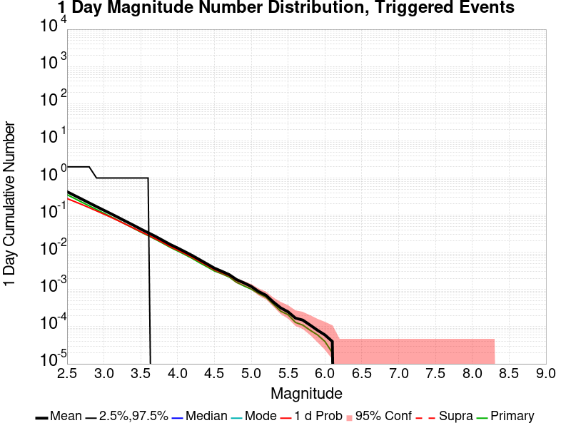
| Mag | Mean | 2.5 %ile | 97.5 %ile | Median | Mode | 1 d Probability | 1 d Prob 95% Conf | 1 d Supra-Seis Prob | Primary Aftershocks Mean |
|---|---|---|---|---|---|---|---|---|---|
| M≥2.5 | 0.428 | 0.000 | 2.000 | 0.000 | 0.000 | 0.280 (27.96%) | [27.68% 28.24%] | 0.000 (0.00%) | 0.355 |
| M≥2.6 | 0.339 | 0.000 | 2.000 | 0.000 | 0.000 | 0.233 (23.29%) | [23.02% 23.55%] | 0.000 (0.00%) | 0.282 |
| M≥2.7 | 0.269 | 0.000 | 2.000 | 0.000 | 0.000 | 0.193 (19.34%) | [19.10% 19.59%] | 0.000 (0.00%) | 0.224 |
| M≥2.8 | 0.214 | 0.000 | 2.000 | 0.000 | 0.000 | 0.159 (15.91%) | [15.69% 16.14%] | 0.000 (0.00%) | 0.178 |
| M≥2.9 | 0.170 | 0.000 | 1.000 | 0.000 | 0.000 | 0.130 (13.03%) | [12.82% 13.24%] | 0.000 (0.00%) | 0.142 |
| M≥3 | 0.136 | 0.000 | 1.000 | 0.000 | 0.000 | 0.106 (10.64%) | [10.45% 10.84%] | 0.000 (0.00%) | 0.113 |
| M≥3.1 | 0.108 | 0.000 | 1.000 | 0.000 | 0.000 | 0.087 (8.70%) | [8.52% 8.87%] | 0.000 (0.00%) | 0.090 |
| M≥3.2 | 0.086 | 0.000 | 1.000 | 0.000 | 0.000 | 0.070 (7.00%) | [6.84% 7.16%] | 0.000 (0.00%) | 0.071 |
| M≥3.3 | 0.068 | 0.000 | 1.000 | 0.000 | 0.000 | 0.056 (5.62%) | [5.48% 5.77%] | 0.000 (0.00%) | 0.056 |
| M≥3.4 | 0.054 | 0.000 | 1.000 | 0.000 | 0.000 | 0.045 (4.51%) | [4.38% 4.64%] | 0.000 (0.00%) | 0.044 |
| M≥3.5 | 0.042 | 0.000 | 1.000 | 0.000 | 0.000 | 0.036 (3.60%) | [3.48% 3.71%] | 0.000 (0.00%) | 0.035 |
| M≥3.6 | 0.034 | 0.000 | 1.000 | 0.000 | 0.000 | 0.029 (2.90%) | [2.79% 3.00%] | 0.000 (0.00%) | 0.028 |
| M≥3.7 | 0.027 | 0.000 | 0.000 | 0.000 | 0.000 | 0.023 (2.32%) | [2.23% 2.42%] | 0.000 (0.00%) | 0.022 |
| M≥3.8 | 0.021 | 0.000 | 0.000 | 0.000 | 0.000 | 0.018 (1.83%) | [1.75% 1.92%] | 0.000 (0.00%) | 0.018 |
| M≥3.9 | 0.016 | 0.000 | 0.000 | 0.000 | 0.000 | 0.014 (1.43%) | [1.36% 1.51%] | 0.000 (0.00%) | 0.014 |
| M≥4 | 0.013 | 0.000 | 0.000 | 0.000 | 0.000 | 0.012 (1.16%) | [1.09% 1.22%] | 0.000 (0.00%) | 0.011 |
| M≥4.1 | 0.010 | 0.000 | 0.000 | 0.000 | 0.000 | 9.28E-3 (0.93%) | [0.87% 0.99%] | 0.000 (0.00%) | 8.70E-3 |
| M≥4.2 | 8.18E-3 | 0.000 | 0.000 | 0.000 | 0.000 | 7.34E-3 (0.73%) | [0.68% 0.79%] | 0.000 (0.00%) | 6.84E-3 |
| M≥4.3 | 6.32E-3 | 0.000 | 0.000 | 0.000 | 0.000 | 5.69E-3 (0.57%) | [0.52% 0.62%] | 0.000 (0.00%) | 5.24E-3 |
| M≥4.4 | 4.88E-3 | 0.000 | 0.000 | 0.000 | 0.000 | 4.47E-3 (0.45%) | [0.41% 0.49%] | 0.000 (0.00%) | 4.08E-3 |
| M≥4.5 | 3.75E-3 | 0.000 | 0.000 | 0.000 | 0.000 | 3.43E-3 (0.34%) | [0.31% 0.38%] | 0.000 (0.00%) | 3.15E-3 |
| M≥4.6 | 3.09E-3 | 0.000 | 0.000 | 0.000 | 0.000 | 2.86E-3 (0.29%) | [0.25% 0.32%] | 0.000 (0.00%) | 2.65E-3 |
| M≥4.7 | 2.52E-3 | 0.000 | 0.000 | 0.000 | 0.000 | 2.36E-3 (0.24%) | [0.21% 0.27%] | 0.000 (0.00%) | 2.16E-3 |
| M≥4.8 | 1.85E-3 | 0.000 | 0.000 | 0.000 | 0.000 | 1.75E-3 (0.18%) | [0.15% 0.20%] | 0.000 (0.00%) | 1.56E-3 |
| M≥4.9 | 1.51E-3 | 0.000 | 0.000 | 0.000 | 0.000 | 1.45E-3 (0.14%) | [0.12% 0.17%] | 0.000 (0.00%) | 1.25E-3 |
| M≥5 | 1.21E-3 | 0.000 | 0.000 | 0.000 | 0.000 | 1.17E-3 (0.12%) | [0.10% 0.14%] | 0.000 (0.00%) | 1.02E-3 |
| M≥5.1 | 8.80E-4 | 0.000 | 0.000 | 0.000 | 0.000 | 8.70E-4 (0.09%) | [0.07% 0.11%] | 0.000 (0.00%) | 7.80E-4 |
| M≥5.2 | 7.00E-4 | 0.000 | 0.000 | 0.000 | 0.000 | 6.90E-4 (0.07%) | [0.05% 0.09%] | 0.000 (0.00%) | 6.20E-4 |
| M≥5.3 | 4.60E-4 | 0.000 | 0.000 | 0.000 | 0.000 | 4.60E-4 (0.05%) | [0.03% 0.06%] | 0.000 (0.00%) | 4.00E-4 |
| M≥5.4 | 3.20E-4 | 0.000 | 0.000 | 0.000 | 0.000 | 3.20E-4 (0.03%) | [0.02% 0.05%] | 0.000 (0.00%) | 2.60E-4 |
| M≥5.5 | 2.50E-4 | 0.000 | 0.000 | 0.000 | 0.000 | 2.50E-4 (0.03%) | [0.02% 0.04%] | 0.000 (0.00%) | 2.10E-4 |
| M≥5.6 | 1.70E-4 | 0.000 | 0.000 | 0.000 | 0.000 | 1.70E-4 (0.02%) | [0.01% 0.03%] | 0.000 (0.00%) | 1.30E-4 |
| M≥5.7 | 1.50E-4 | 0.000 | 0.000 | 0.000 | 0.000 | 1.50E-4 (0.01%) | [0.01% 0.03%] | 0.000 (0.00%) | 1.10E-4 |
| M≥5.8 | 1.10E-4 | 0.000 | 0.000 | 0.000 | 0.000 | 1.10E-4 (0.01%) | [0.01% 0.02%] | 0.000 (0.00%) | 8.00E-5 |
| M≥5.9 | 8.00E-5 | 0.000 | 0.000 | 0.000 | 0.000 | 8.00E-5 (0.01%) | [0.00% 0.02%] | 0.000 (0.00%) | 6.00E-5 |
| M≥6 | 6.00E-5 | 0.000 | 0.000 | 0.000 | 0.000 | 6.00E-5 (0.01%) | [0.00% 0.01%] | 0.000 (0.00%) | 4.00E-5 |
| M≥6.1 | 4.00E-5 | 0.000 | 0.000 | 0.000 | 0.000 | 4.00E-5 (0.00%) | [0.00% 0.01%] | 0.000 (0.00%) | 2.00E-5 |
| M≥6.2 | 0.000 | 0.000 | 0.000 | 0.000 | 0.000 | 0.000 (0.00%) | [0.00% 0.00%] | 0.000 (0.00%) | 0.000 |
| M≥6.3 | 0.000 | 0.000 | 0.000 | 0.000 | 0.000 | 0.000 (0.00%) | [0.00% 0.00%] | 0.000 (0.00%) | 0.000 |
| M≥6.4 | 0.000 | 0.000 | 0.000 | 0.000 | 0.000 | 0.000 (0.00%) | [0.00% 0.00%] | 0.000 (0.00%) | 0.000 |
| M≥6.5 | 0.000 | 0.000 | 0.000 | 0.000 | 0.000 | 0.000 (0.00%) | [0.00% 0.00%] | 0.000 (0.00%) | 0.000 |
| M≥6.6 | 0.000 | 0.000 | 0.000 | 0.000 | 0.000 | 0.000 (0.00%) | [0.00% 0.00%] | 0.000 (0.00%) | 0.000 |
| M≥6.7 | 0.000 | 0.000 | 0.000 | 0.000 | 0.000 | 0.000 (0.00%) | [0.00% 0.00%] | 0.000 (0.00%) | 0.000 |
| M≥6.8 | 0.000 | 0.000 | 0.000 | 0.000 | 0.000 | 0.000 (0.00%) | [0.00% 0.00%] | 0.000 (0.00%) | 0.000 |
| M≥6.9 | 0.000 | 0.000 | 0.000 | 0.000 | 0.000 | 0.000 (0.00%) | [0.00% 0.00%] | 0.000 (0.00%) | 0.000 |
| M≥7 | 0.000 | 0.000 | 0.000 | 0.000 | 0.000 | 0.000 (0.00%) | [0.00% 0.00%] | 0.000 (0.00%) | 0.000 |
| M≥7.1 | 0.000 | 0.000 | 0.000 | 0.000 | 0.000 | 0.000 (0.00%) | [0.00% 0.00%] | 0.000 (0.00%) | 0.000 |
| M≥7.2 | 0.000 | 0.000 | 0.000 | 0.000 | 0.000 | 0.000 (0.00%) | [0.00% 0.00%] | 0.000 (0.00%) | 0.000 |
| M≥7.3 | 0.000 | 0.000 | 0.000 | 0.000 | 0.000 | 0.000 (0.00%) | [0.00% 0.00%] | 0.000 (0.00%) | 0.000 |
| M≥7.4 | 0.000 | 0.000 | 0.000 | 0.000 | 0.000 | 0.000 (0.00%) | [0.00% 0.00%] | 0.000 (0.00%) | 0.000 |
| M≥7.5 | 0.000 | 0.000 | 0.000 | 0.000 | 0.000 | 0.000 (0.00%) | [0.00% 0.00%] | 0.000 (0.00%) | 0.000 |
| M≥7.6 | 0.000 | 0.000 | 0.000 | 0.000 | 0.000 | 0.000 (0.00%) | [0.00% 0.00%] | 0.000 (0.00%) | 0.000 |
| M≥7.7 | 0.000 | 0.000 | 0.000 | 0.000 | 0.000 | 0.000 (0.00%) | [0.00% 0.00%] | 0.000 (0.00%) | 0.000 |
| M≥7.8 | 0.000 | 0.000 | 0.000 | 0.000 | 0.000 | 0.000 (0.00%) | [0.00% 0.00%] | 0.000 (0.00%) | 0.000 |
| M≥7.9 | 0.000 | 0.000 | 0.000 | 0.000 | 0.000 | 0.000 (0.00%) | [0.00% 0.00%] | 0.000 (0.00%) | 0.000 |
| M≥8 | 0.000 | 0.000 | 0.000 | 0.000 | 0.000 | 0.000 (0.00%) | [0.00% 0.00%] | 0.000 (0.00%) | 0.000 |
| M≥8.1 | 0.000 | 0.000 | 0.000 | 0.000 | 0.000 | 0.000 (0.00%) | [0.00% 0.00%] | 0.000 (0.00%) | 0.000 |
| M≥8.2 | 0.000 | 0.000 | 0.000 | 0.000 | 0.000 | 0.000 (0.00%) | [0.00% 0.00%] | 0.000 (0.00%) | 0.000 |
| M≥8.3 | 0.000 | 0.000 | 0.000 | 0.000 | 0.000 | 0.000 (0.00%) | [0.00% 0.00%] | 0.000 (0.00%) | 0.000 |
| M≥8.4 | 0.000 | 0.000 | 0.000 | 0.000 | 0.000 | 0.000 (0.00%) | [0.00% 0.00%] | 0.000 (0.00%) | 0.000 |
| M≥8.5 | 0.000 | 0.000 | 0.000 | 0.000 | 0.000 | 0.000 (0.00%) | [0.00% 0.00%] | 0.000 (0.00%) | 0.000 |
| M≥8.6 | 0.000 | 0.000 | 0.000 | 0.000 | 0.000 | 0.000 (0.00%) | [0.00% 0.00%] | 0.000 (0.00%) | 0.000 |
| M≥8.7 | 0.000 | 0.000 | 0.000 | 0.000 | 0.000 | 0.000 (0.00%) | [0.00% 0.00%] | 0.000 (0.00%) | 0.000 |
| M≥8.8 | 0.000 | 0.000 | 0.000 | 0.000 | 0.000 | 0.000 (0.00%) | [0.00% 0.00%] | 0.000 (0.00%) | 0.000 |
| M≥8.9 | 0.000 | 0.000 | 0.000 | 0.000 | 0.000 | 0.000 (0.00%) | [0.00% 0.00%] | 0.000 (0.00%) | 0.000 |
| M≥9 | 0.000 | 0.000 | 0.000 | 0.000 | 0.000 | 0.000 (0.00%) | [0.00% 0.00%] | 0.000 (0.00%) | 0.000 |
Legend

| Mag | Mean | 2.5 %ile | 97.5 %ile | Median | Mode | 1 hr Probability | 1 hr Prob 95% Conf | 1 hr Supra-Seis Prob | Primary Aftershocks Mean |
|---|---|---|---|---|---|---|---|---|---|
| M≥2.5 | 0.020 | 0.000 | 0.000 | 0.000 | 0.000 | 0.018 (1.84%) | [1.76% 1.92%] | 0.000 (0.00%) | 0.019 |
| M≥2.6 | 0.016 | 0.000 | 0.000 | 0.000 | 0.000 | 0.015 (1.45%) | [1.38% 1.53%] | 0.000 (0.00%) | 0.015 |
| M≥2.7 | 0.012 | 0.000 | 0.000 | 0.000 | 0.000 | 0.012 (1.17%) | [1.10% 1.24%] | 0.000 (0.00%) | 0.012 |
| M≥2.8 | 9.98E-3 | 0.000 | 0.000 | 0.000 | 0.000 | 9.40E-3 (0.94%) | [0.88% 1.00%] | 0.000 (0.00%) | 9.39E-3 |
| M≥2.9 | 8.04E-3 | 0.000 | 0.000 | 0.000 | 0.000 | 7.61E-3 (0.76%) | [0.71% 0.82%] | 0.000 (0.00%) | 7.58E-3 |
| M≥3 | 6.33E-3 | 0.000 | 0.000 | 0.000 | 0.000 | 6.02E-3 (0.60%) | [0.56% 0.65%] | 0.000 (0.00%) | 6.00E-3 |
| M≥3.1 | 5.08E-3 | 0.000 | 0.000 | 0.000 | 0.000 | 4.86E-3 (0.49%) | [0.44% 0.53%] | 0.000 (0.00%) | 4.80E-3 |
| M≥3.2 | 3.99E-3 | 0.000 | 0.000 | 0.000 | 0.000 | 3.82E-3 (0.38%) | [0.35% 0.42%] | 0.000 (0.00%) | 3.77E-3 |
| M≥3.3 | 3.03E-3 | 0.000 | 0.000 | 0.000 | 0.000 | 2.91E-3 (0.29%) | [0.26% 0.33%] | 0.000 (0.00%) | 2.87E-3 |
| M≥3.4 | 2.38E-3 | 0.000 | 0.000 | 0.000 | 0.000 | 2.29E-3 (0.23%) | [0.20% 0.26%] | 0.000 (0.00%) | 2.26E-3 |
| M≥3.5 | 1.78E-3 | 0.000 | 0.000 | 0.000 | 0.000 | 1.72E-3 (0.17%) | [0.15% 0.20%] | 0.000 (0.00%) | 1.71E-3 |
| M≥3.6 | 1.46E-3 | 0.000 | 0.000 | 0.000 | 0.000 | 1.40E-3 (0.14%) | [0.12% 0.17%] | 0.000 (0.00%) | 1.39E-3 |
| M≥3.7 | 1.17E-3 | 0.000 | 0.000 | 0.000 | 0.000 | 1.13E-3 (0.11%) | [0.09% 0.14%] | 0.000 (0.00%) | 1.10E-3 |
| M≥3.8 | 8.70E-4 | 0.000 | 0.000 | 0.000 | 0.000 | 8.40E-4 (0.08%) | [0.07% 0.10%] | 0.000 (0.00%) | 8.20E-4 |
| M≥3.9 | 6.80E-4 | 0.000 | 0.000 | 0.000 | 0.000 | 6.50E-4 (0.07%) | [0.05% 0.08%] | 0.000 (0.00%) | 6.30E-4 |
| M≥4 | 5.70E-4 | 0.000 | 0.000 | 0.000 | 0.000 | 5.40E-4 (0.05%) | [0.04% 0.07%] | 0.000 (0.00%) | 5.20E-4 |
| M≥4.1 | 4.30E-4 | 0.000 | 0.000 | 0.000 | 0.000 | 4.20E-4 (0.04%) | [0.03% 0.06%] | 0.000 (0.00%) | 3.90E-4 |
| M≥4.2 | 3.40E-4 | 0.000 | 0.000 | 0.000 | 0.000 | 3.30E-4 (0.03%) | [0.02% 0.05%] | 0.000 (0.00%) | 3.10E-4 |
| M≥4.3 | 2.50E-4 | 0.000 | 0.000 | 0.000 | 0.000 | 2.50E-4 (0.03%) | [0.02% 0.04%] | 0.000 (0.00%) | 2.30E-4 |
| M≥4.4 | 1.80E-4 | 0.000 | 0.000 | 0.000 | 0.000 | 1.80E-4 (0.02%) | [0.01% 0.03%] | 0.000 (0.00%) | 1.70E-4 |
| M≥4.5 | 1.30E-4 | 0.000 | 0.000 | 0.000 | 0.000 | 1.30E-4 (0.01%) | [0.01% 0.02%] | 0.000 (0.00%) | 1.20E-4 |
| M≥4.6 | 1.10E-4 | 0.000 | 0.000 | 0.000 | 0.000 | 1.10E-4 (0.01%) | [0.01% 0.02%] | 0.000 (0.00%) | 1.00E-4 |
| M≥4.7 | 9.00E-5 | 0.000 | 0.000 | 0.000 | 0.000 | 9.00E-5 (0.01%) | [0.00% 0.02%] | 0.000 (0.00%) | 8.00E-5 |
| M≥4.8 | 7.00E-5 | 0.000 | 0.000 | 0.000 | 0.000 | 7.00E-5 (0.01%) | [0.00% 0.02%] | 0.000 (0.00%) | 6.00E-5 |
| M≥4.9 | 6.00E-5 | 0.000 | 0.000 | 0.000 | 0.000 | 6.00E-5 (0.01%) | [0.00% 0.01%] | 0.000 (0.00%) | 5.00E-5 |
| M≥5 | 5.00E-5 | 0.000 | 0.000 | 0.000 | 0.000 | 5.00E-5 (0.01%) | [0.00% 0.01%] | 0.000 (0.00%) | 5.00E-5 |
| M≥5.1 | 4.00E-5 | 0.000 | 0.000 | 0.000 | 0.000 | 4.00E-5 (0.00%) | [0.00% 0.01%] | 0.000 (0.00%) | 4.00E-5 |
| M≥5.2 | 3.00E-5 | 0.000 | 0.000 | 0.000 | 0.000 | 3.00E-5 (0.00%) | [0.00% 0.01%] | 0.000 (0.00%) | 3.00E-5 |
| M≥5.3 | 1.00E-5 | 0.000 | 0.000 | 0.000 | 0.000 | 1.00E-5 (0.00%) | [0.00% 0.01%] | 0.000 (0.00%) | 1.00E-5 |
| M≥5.4 | 1.00E-5 | 0.000 | 0.000 | 0.000 | 0.000 | 1.00E-5 (0.00%) | [0.00% 0.01%] | 0.000 (0.00%) | 1.00E-5 |
| M≥5.5 | 1.00E-5 | 0.000 | 0.000 | 0.000 | 0.000 | 1.00E-5 (0.00%) | [0.00% 0.01%] | 0.000 (0.00%) | 1.00E-5 |
| M≥5.6 | 0.000 | 0.000 | 0.000 | 0.000 | 0.000 | 0.000 (0.00%) | [0.00% 0.00%] | 0.000 (0.00%) | 0.000 |
| M≥5.7 | 0.000 | 0.000 | 0.000 | 0.000 | 0.000 | 0.000 (0.00%) | [0.00% 0.00%] | 0.000 (0.00%) | 0.000 |
| M≥5.8 | 0.000 | 0.000 | 0.000 | 0.000 | 0.000 | 0.000 (0.00%) | [0.00% 0.00%] | 0.000 (0.00%) | 0.000 |
| M≥5.9 | 0.000 | 0.000 | 0.000 | 0.000 | 0.000 | 0.000 (0.00%) | [0.00% 0.00%] | 0.000 (0.00%) | 0.000 |
| M≥6 | 0.000 | 0.000 | 0.000 | 0.000 | 0.000 | 0.000 (0.00%) | [0.00% 0.00%] | 0.000 (0.00%) | 0.000 |
| M≥6.1 | 0.000 | 0.000 | 0.000 | 0.000 | 0.000 | 0.000 (0.00%) | [0.00% 0.00%] | 0.000 (0.00%) | 0.000 |
| M≥6.2 | 0.000 | 0.000 | 0.000 | 0.000 | 0.000 | 0.000 (0.00%) | [0.00% 0.00%] | 0.000 (0.00%) | 0.000 |
| M≥6.3 | 0.000 | 0.000 | 0.000 | 0.000 | 0.000 | 0.000 (0.00%) | [0.00% 0.00%] | 0.000 (0.00%) | 0.000 |
| M≥6.4 | 0.000 | 0.000 | 0.000 | 0.000 | 0.000 | 0.000 (0.00%) | [0.00% 0.00%] | 0.000 (0.00%) | 0.000 |
| M≥6.5 | 0.000 | 0.000 | 0.000 | 0.000 | 0.000 | 0.000 (0.00%) | [0.00% 0.00%] | 0.000 (0.00%) | 0.000 |
| M≥6.6 | 0.000 | 0.000 | 0.000 | 0.000 | 0.000 | 0.000 (0.00%) | [0.00% 0.00%] | 0.000 (0.00%) | 0.000 |
| M≥6.7 | 0.000 | 0.000 | 0.000 | 0.000 | 0.000 | 0.000 (0.00%) | [0.00% 0.00%] | 0.000 (0.00%) | 0.000 |
| M≥6.8 | 0.000 | 0.000 | 0.000 | 0.000 | 0.000 | 0.000 (0.00%) | [0.00% 0.00%] | 0.000 (0.00%) | 0.000 |
| M≥6.9 | 0.000 | 0.000 | 0.000 | 0.000 | 0.000 | 0.000 (0.00%) | [0.00% 0.00%] | 0.000 (0.00%) | 0.000 |
| M≥7 | 0.000 | 0.000 | 0.000 | 0.000 | 0.000 | 0.000 (0.00%) | [0.00% 0.00%] | 0.000 (0.00%) | 0.000 |
| M≥7.1 | 0.000 | 0.000 | 0.000 | 0.000 | 0.000 | 0.000 (0.00%) | [0.00% 0.00%] | 0.000 (0.00%) | 0.000 |
| M≥7.2 | 0.000 | 0.000 | 0.000 | 0.000 | 0.000 | 0.000 (0.00%) | [0.00% 0.00%] | 0.000 (0.00%) | 0.000 |
| M≥7.3 | 0.000 | 0.000 | 0.000 | 0.000 | 0.000 | 0.000 (0.00%) | [0.00% 0.00%] | 0.000 (0.00%) | 0.000 |
| M≥7.4 | 0.000 | 0.000 | 0.000 | 0.000 | 0.000 | 0.000 (0.00%) | [0.00% 0.00%] | 0.000 (0.00%) | 0.000 |
| M≥7.5 | 0.000 | 0.000 | 0.000 | 0.000 | 0.000 | 0.000 (0.00%) | [0.00% 0.00%] | 0.000 (0.00%) | 0.000 |
| M≥7.6 | 0.000 | 0.000 | 0.000 | 0.000 | 0.000 | 0.000 (0.00%) | [0.00% 0.00%] | 0.000 (0.00%) | 0.000 |
| M≥7.7 | 0.000 | 0.000 | 0.000 | 0.000 | 0.000 | 0.000 (0.00%) | [0.00% 0.00%] | 0.000 (0.00%) | 0.000 |
| M≥7.8 | 0.000 | 0.000 | 0.000 | 0.000 | 0.000 | 0.000 (0.00%) | [0.00% 0.00%] | 0.000 (0.00%) | 0.000 |
| M≥7.9 | 0.000 | 0.000 | 0.000 | 0.000 | 0.000 | 0.000 (0.00%) | [0.00% 0.00%] | 0.000 (0.00%) | 0.000 |
| M≥8 | 0.000 | 0.000 | 0.000 | 0.000 | 0.000 | 0.000 (0.00%) | [0.00% 0.00%] | 0.000 (0.00%) | 0.000 |
| M≥8.1 | 0.000 | 0.000 | 0.000 | 0.000 | 0.000 | 0.000 (0.00%) | [0.00% 0.00%] | 0.000 (0.00%) | 0.000 |
| M≥8.2 | 0.000 | 0.000 | 0.000 | 0.000 | 0.000 | 0.000 (0.00%) | [0.00% 0.00%] | 0.000 (0.00%) | 0.000 |
| M≥8.3 | 0.000 | 0.000 | 0.000 | 0.000 | 0.000 | 0.000 (0.00%) | [0.00% 0.00%] | 0.000 (0.00%) | 0.000 |
| M≥8.4 | 0.000 | 0.000 | 0.000 | 0.000 | 0.000 | 0.000 (0.00%) | [0.00% 0.00%] | 0.000 (0.00%) | 0.000 |
| M≥8.5 | 0.000 | 0.000 | 0.000 | 0.000 | 0.000 | 0.000 (0.00%) | [0.00% 0.00%] | 0.000 (0.00%) | 0.000 |
| M≥8.6 | 0.000 | 0.000 | 0.000 | 0.000 | 0.000 | 0.000 (0.00%) | [0.00% 0.00%] | 0.000 (0.00%) | 0.000 |
| M≥8.7 | 0.000 | 0.000 | 0.000 | 0.000 | 0.000 | 0.000 (0.00%) | [0.00% 0.00%] | 0.000 (0.00%) | 0.000 |
| M≥8.8 | 0.000 | 0.000 | 0.000 | 0.000 | 0.000 | 0.000 (0.00%) | [0.00% 0.00%] | 0.000 (0.00%) | 0.000 |
| M≥8.9 | 0.000 | 0.000 | 0.000 | 0.000 | 0.000 | 0.000 (0.00%) | [0.00% 0.00%] | 0.000 (0.00%) | 0.000 |
| M≥9 | 0.000 | 0.000 | 0.000 | 0.000 | 0.000 | 0.000 (0.00%) | [0.00% 0.00%] | 0.000 (0.00%) | 0.000 |
These plots show how the probability of ruptures of various magnitudes within the region used to fetch ComCat trigger ruptures changes over time

| Forecast Duration | UCERF3-ETAS [95% Conf] | UCERF3-ETAS Triggered Only | UCERF3-TD | UCERF3-ETAS/TD Gain | UCERF3-TI |
|---|---|---|---|---|---|
| 1 Hour | 5.34E-5 [2.18E-5 - 1.27E-4] | 5.00E-5 | 3.40E-6 | 15.71 | 3.35E-6 |
| 1 Day | 1.15E-3 [9.63E-4 - 1.38E-3] | 1.07E-3 | 8.16E-5 | 14.12 | 8.05E-5 |
| 1 Week | 5.31E-3 [4.90E-3 - 5.76E-3] | 4.74E-3 | 5.71E-4 | 9.3 | 5.63E-4 |
| 1 Month | 0.012 [0.012 - 0.013] | 9.85E-3 | 2.44E-3 | 5.02 | 2.41E-3 |
| 1 Year | 0.048 [0.047 - 0.049] | 0.019 | 0.029 | 1.64 | 0.029 |
| 10 Years | 0.279 [0.278 - 0.280] | 0.028 | 0.258 | 1.08 | 0.255 |
| 30 Years | 0.607 [0.607 - 0.608] * | * | 0.596 | 1.02 * | 0.586 |
| 100 Years | 0.957 [0.957 - 0.957] * | * | 0.956 | 1 * | 0.947 |
* forecast duration is longer than simulation length, only ETAS ruptures from the first 10 years are included

| Forecast Duration | UCERF3-ETAS [95% Conf] | UCERF3-ETAS Triggered Only | UCERF3-TD | UCERF3-ETAS/TD Gain | UCERF3-TI |
|---|---|---|---|---|---|
| 1 Hour | 4.38E-7 [4.38E-7 - 4.83E-5] | 0.000 | 4.38E-7 | 1 | 3.94E-7 |
| 1 Day | 7.05E-5 [3.49E-5 - 1.48E-4] | 6.00E-5 | 1.05E-5 | 6.7 | 9.46E-6 |
| 1 Week | 3.24E-4 [2.39E-4 - 4.49E-4] | 2.50E-4 | 7.37E-5 | 4.39 | 6.62E-5 |
| 1 Month | 8.85E-4 [7.51E-4 - 1.06E-3] | 5.70E-4 | 3.16E-4 | 2.81 | 2.84E-4 |
| 1 Year | 5.14E-3 [4.93E-3 - 5.39E-3] | 1.31E-3 | 3.84E-3 | 1.34 | 3.45E-3 |
| 10 Years | 0.041 [0.040 - 0.041] | 1.95E-3 | 0.039 | 1.05 | 0.034 |
| 30 Years | 0.122 [0.122 - 0.122] * | * | 0.120 | 1.01 * | 0.098 |
| 100 Years | 0.408 [0.408 - 0.408] * | * | 0.407 | 1 * | 0.292 |
* forecast duration is longer than simulation length, only ETAS ruptures from the first 10 years are included

| Forecast Duration | UCERF3-ETAS [95% Conf] | UCERF3-ETAS Triggered Only | UCERF3-TD | UCERF3-ETAS/TD Gain | UCERF3-TI |
|---|---|---|---|---|---|
| 1 Hour | 2.27E-7 [2.27E-7 - 4.81E-5] | 0.000 | 2.27E-7 | 1 | 1.83E-7 |
| 1 Day | 5.45E-6 [5.45E-6 - 5.33E-5] | 0.000 | 5.45E-6 | 1 | 4.40E-6 |
| 1 Week | 3.81E-5 [3.81E-5 - 8.60E-5] | 0.000 | 3.81E-5 | 1 | 3.08E-5 |
| 1 Month | 1.73E-4 [1.64E-4 - 2.28E-4] | 1.00E-5 | 1.63E-4 | 1.06 | 1.32E-4 |
| 1 Year | 2.04E-3 [2.01E-3 - 2.11E-3] | 5.00E-5 | 1.99E-3 | 1.03 | 1.61E-3 |
| 10 Years | 0.021 [0.021 - 0.021] | 1.40E-4 | 0.021 | 1.01 | 0.016 |
| 30 Years | 0.069 [0.069 - 0.069] * | * | 0.068 | 1 * | 0.047 |
| 100 Years | 0.272 [0.272 - 0.272] * | * | 0.272 | 1 * | 0.148 |
* forecast duration is longer than simulation length, only ETAS ruptures from the first 10 years are included

| Forecast Duration | UCERF3-ETAS [95% Conf] | UCERF3-ETAS Triggered Only | UCERF3-TD | UCERF3-ETAS/TD Gain | UCERF3-TI |
|---|---|---|---|---|---|
| 1 Hour | 9.23E-8 [9.23E-8 - 4.80E-5] | 0.000 | 9.23E-8 | 1 | 7.41E-8 |
| 1 Day | 2.22E-6 [2.22E-6 - 5.01E-5] | 0.000 | 2.22E-6 | 1 | 1.78E-6 |
| 1 Week | 1.55E-5 [1.55E-5 - 6.34E-5] | 0.000 | 1.55E-5 | 1 | 1.24E-5 |
| 1 Month | 7.65E-5 [6.70E-5 - 1.31E-4] | 1.00E-5 | 6.65E-5 | 1.15 | 5.33E-5 |
| 1 Year | 8.19E-4 [8.09E-4 - 8.74E-4] | 1.00E-5 | 8.09E-4 | 1.01 | 6.49E-4 |
| 10 Years | 8.58E-3 [8.57E-3 - 8.64E-3] | 1.00E-5 | 8.57E-3 | 1 | 6.47E-3 |
| 30 Years | 0.030 [0.030 - 0.030] * | * | 0.030 | 1 * | 0.019 |
| 100 Years | 0.128 [0.128 - 0.128] * | * | 0.128 | 1 * | 0.063 |
* forecast duration is longer than simulation length, only ETAS ruptures from the first 10 years are included

| Section Name | Strike, Dip, Rake | # Hypos In Poly | Max Mag w/ Hypo In Poly | # Surfs In Poly | Max Mag w/ Surf In Poly | Min Dist To Any (km) | Min Poly Dist To Any (km) | Min Dist To Largest (km) | Min Poly Dist To Largest (km) |
|---|---|---|---|---|---|---|---|---|---|
| San Jacinto (Anza) rev | 127, 90, 180 | 17 | 3.66 | 17 | 3.66 | 0.323 | 0.000 | 0.771 | 0.516 |
| San Jacinto (Coyote Creek) | 133, 90, 180 | 8 | 4.87 | 8 | 4.87 | 3.377 | 0.000 | 3.961 | 0.000 |
| San Jacinto (Clark) rev | 124, 90, 180 | 7 | 4.87 | 7 | 4.87 | 0.323 | 0.000 | 0.721 | 0.000 |
These are map plots of individual catalogs from the simulations, selected as the closest catalog to each of the given percentiles in terms of total number of events.
| Duration | p0.0 %-ile | p25.0 %-ile | p50.0 %-ile | p75.0 %-ile | p90.0 %-ile | p95.0 %-ile | p97.5 %-ile | p98.0 %-ile | p99.0 %-ile | p99.5 %-ile | p99.9 %-ile | p99.999 %-ile |
|---|---|---|---|---|---|---|---|---|---|---|---|---|
| 1 Week |  |  |  |  | 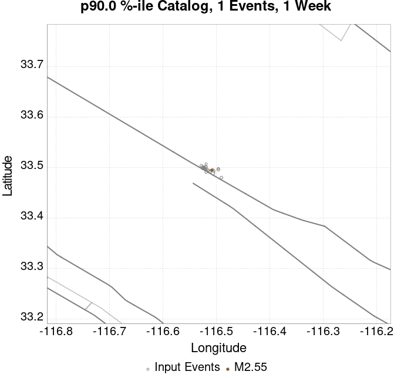 | 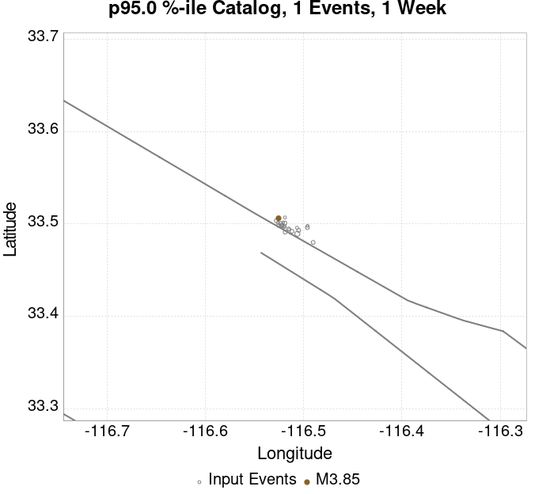 |  |  |  |  |  |  |
| 1 Month |  | 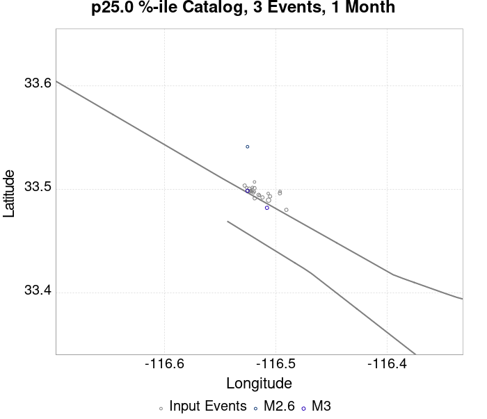 |  |  |  |  |  |  |  |  | 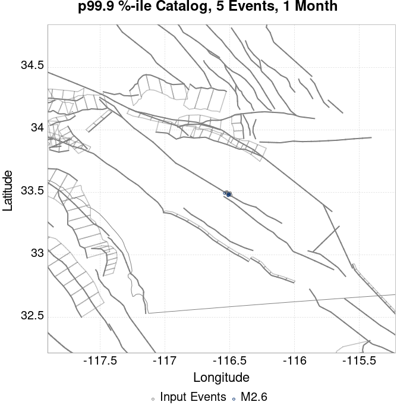 |  |
| 1 Year |  |  |  |  |  |  |  |  |  |  |  | 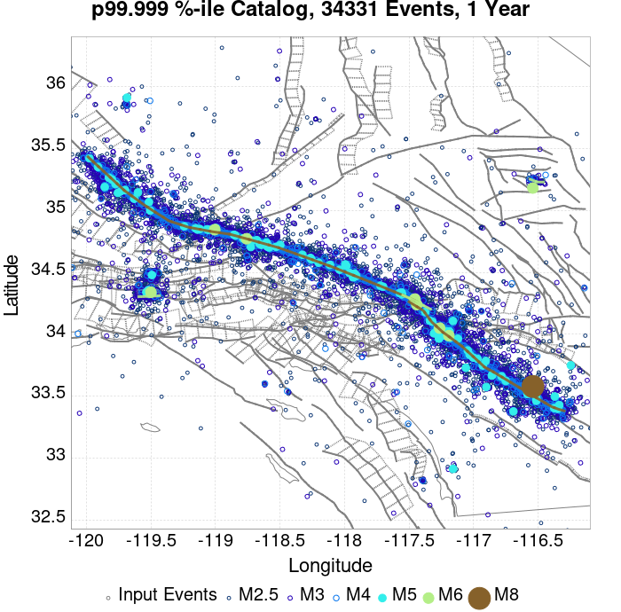 |
| 10 Year |  |  | 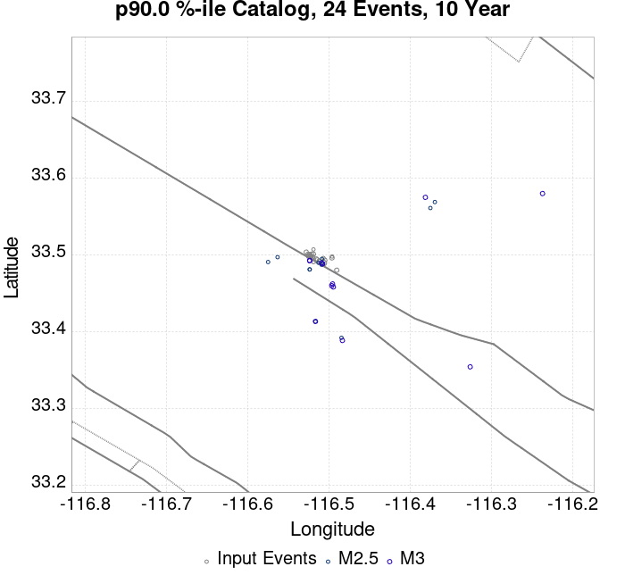 | 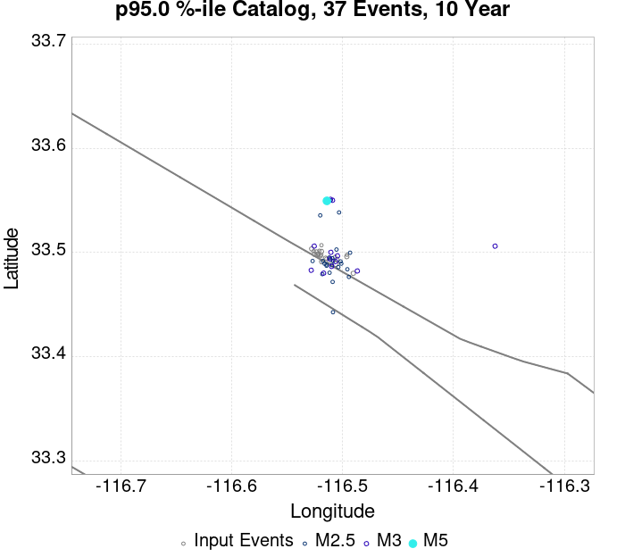 |  |  |  | 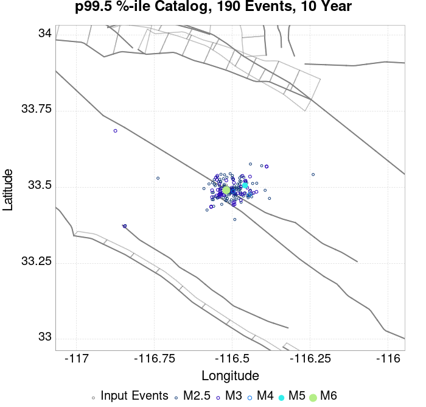 | 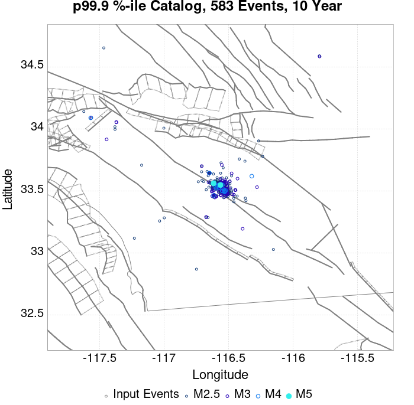 |  |
These plots compare simulated sequences with data from ComCat. All plots only consider events with hypocenters inside the ComCat region defined in the JSON input file.
Last updated at 2020/05/07 17:42:15 UTC, 1 month after the simulation start time and 33.7 days after the mainshock.
Total matching ComCat events found: 697
| Incremental MND | Cumulative MND |
|---|---|
 |  |
These plots show the show the magnitude versus time probability function since simulation start. Observed event data lie on top, with those input to the simulation plotted as magenta circles and those that occurred after the simulation start time as cyan circles. Time is relative to the mainshock (M4.87, ci39126079, plotted as a brown circle). Probabilities are only shown above the minimum simulated magnitude, M=2.5.
| 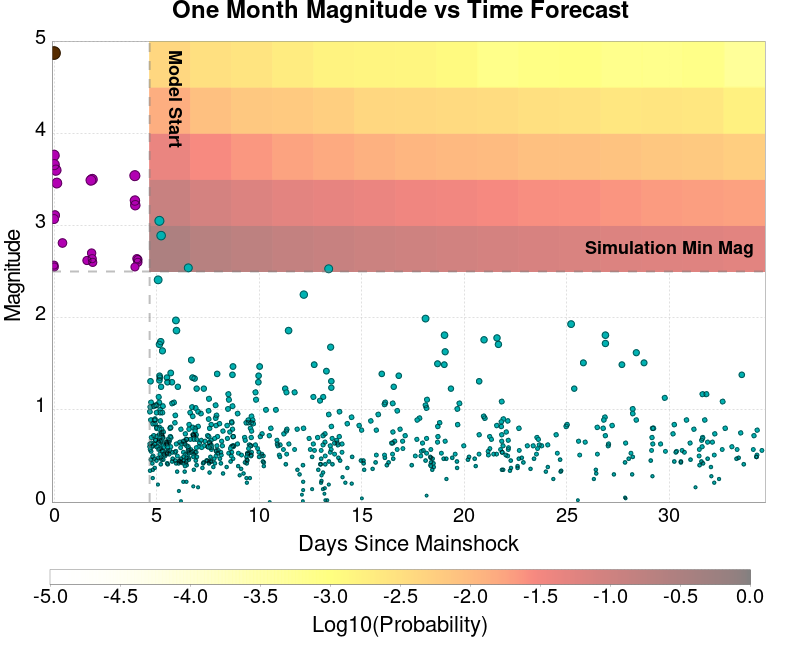 |
The following plots compare simulation results with ComCat data above a magnitude threshold. Plots labeled as M≥Mc(t) use the time-dependent magnitude of completeness (Mc) defined in Helmstetter et al. (2006), which is plotted below. In the case of multiple M≥5 ruptures, either as input to the simulation or in the comparison data, the maximum calculated time-dependent Mc is used. This time-dependent Mc function is plotted below.
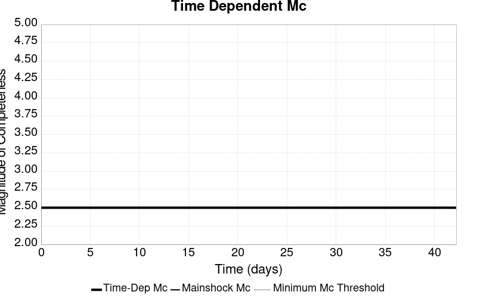
Note: maps labeled 'Forecast' are for a duration that extends into the future, only forecasted values are plotted (ComCat data omitted)
| 1 Day | 1 Week | Current (1 Month) | Forecast: 1 Month | Forecast: 1 Year | |
|---|---|---|---|---|---|
| M≥Mc(t) |  |  |  |  | 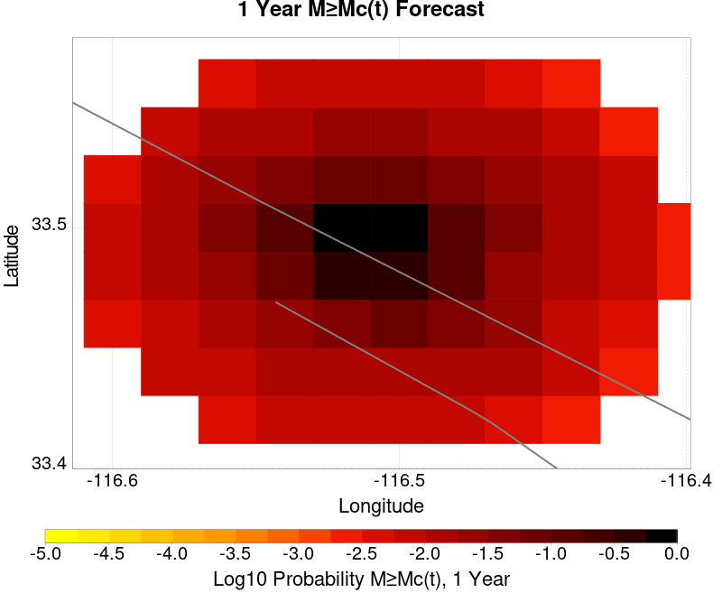 |
| Prob: 26.27%, Actual: 2 | Prob: 64.66%, Actual: 3 | Prob: 83.38%, Actual: 4 | Prob: 83.67% | Prob: 95.04% | |
| M≥2.5 |  |  | 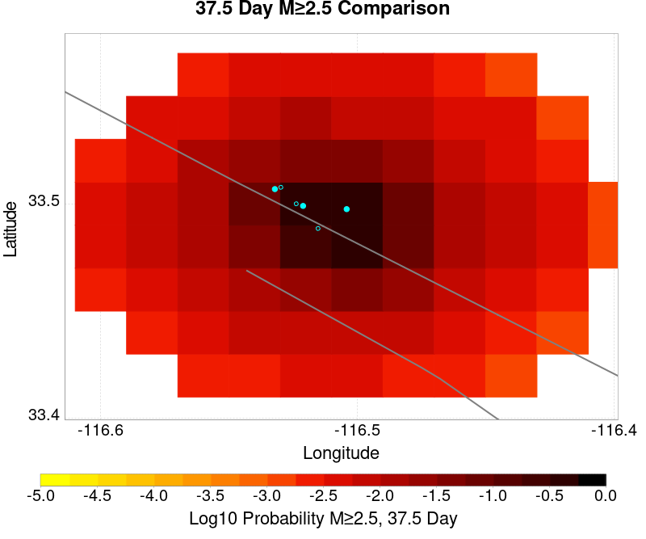 |  | 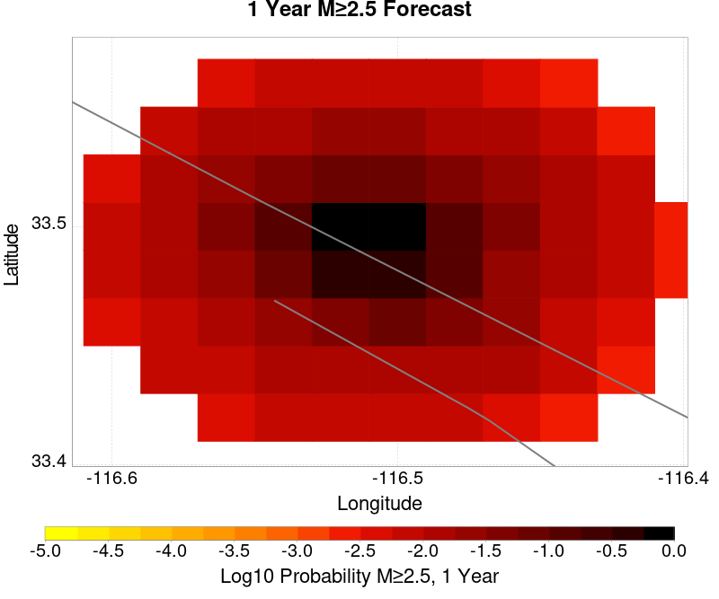 |
| Prob: 26.27%, Actual: 2 | Prob: 64.66%, Actual: 3 | Prob: 83.38%, Actual: 4 | Prob: 83.67% | Prob: 95.04% | |
| M≥3 |  |  |  |  |  |
| Prob: 9.92%, Actual: 1 | Prob: 31.62%, Actual: 1 | Prob: 50.05%, Actual: 1 | Prob: 50.44% | Prob: 70.74% | |
| M≥3.5 |  |  |  |  |  |
| Prob: 3.32%, Actual: 0 | Prob: 12.34%, Actual: 0 | Prob: 22.26%, Actual: 0 | Prob: 22.50% | Prob: 37.51% | |
| M≥4 |  |  |  | 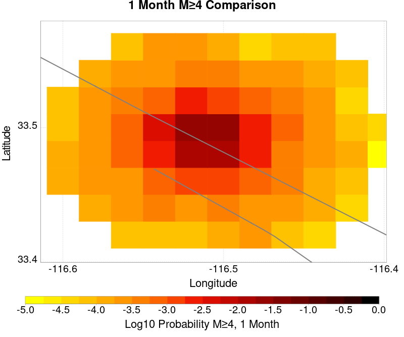 |  |
| Prob: 1.07%, Actual: 0 | Prob: 4.27%, Actual: 0 | Prob: 8.43%, Actual: 0 | Prob: 8.53% | Prob: 15.77% | |
| M≥4.5 |  |  | 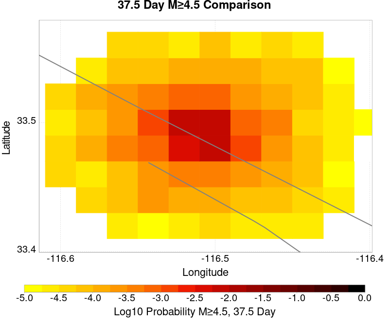 |  | 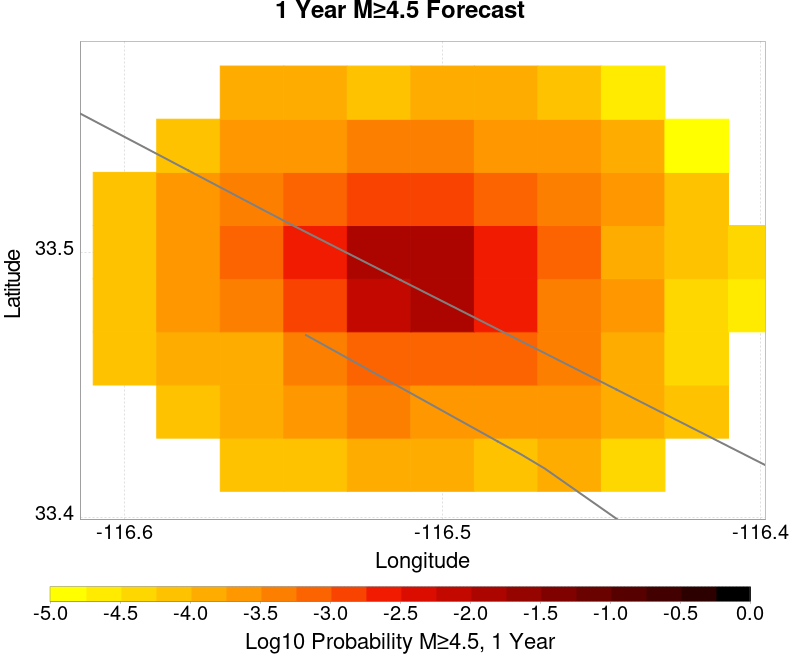 |
| Prob: 0.32%, Actual: 0 | Prob: 1.43%, Actual: 0 | Prob: 2.88%, Actual: 0 | Prob: 2.91% | Prob: 5.70% | |
| M≥5 |  |  |  | 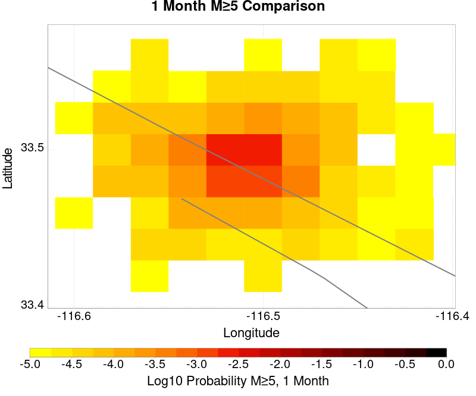 |  |
| Prob: 0.11%, Actual: 0 | Prob: 0.47%, Actual: 0 | Prob: 0.97%, Actual: 0 | Prob: 0.98% | Prob: 1.93% | |
| M≥5.5 | 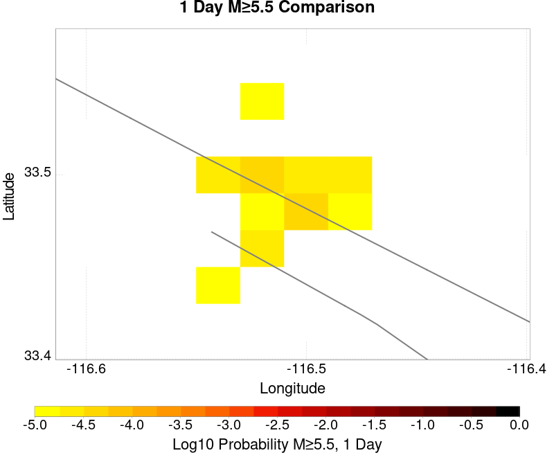 |  |  |  | 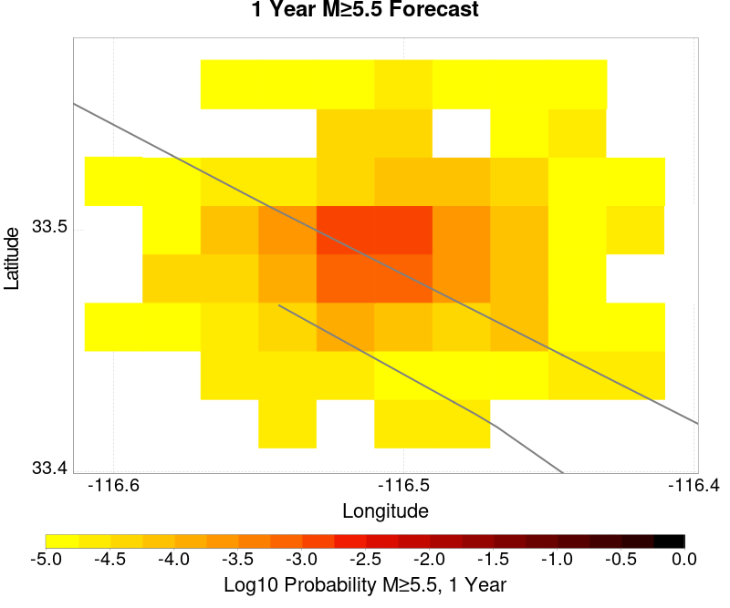 |
| Prob: 0.02%, Actual: 0 | Prob: 0.12%, Actual: 0 | Prob: 0.26%, Actual: 0 | Prob: 0.27% | Prob: 0.56% |
Note: maps labeled 'Forecast' are for a duration that extends into the future, only forecasted values are plotted (ComCat data omitted)
| 1 Day | 1 Week | Current (1 Month) | Forecast: 1 Month | Forecast: 1 Year | |
|---|---|---|---|---|---|
| M≥Mc(t) | 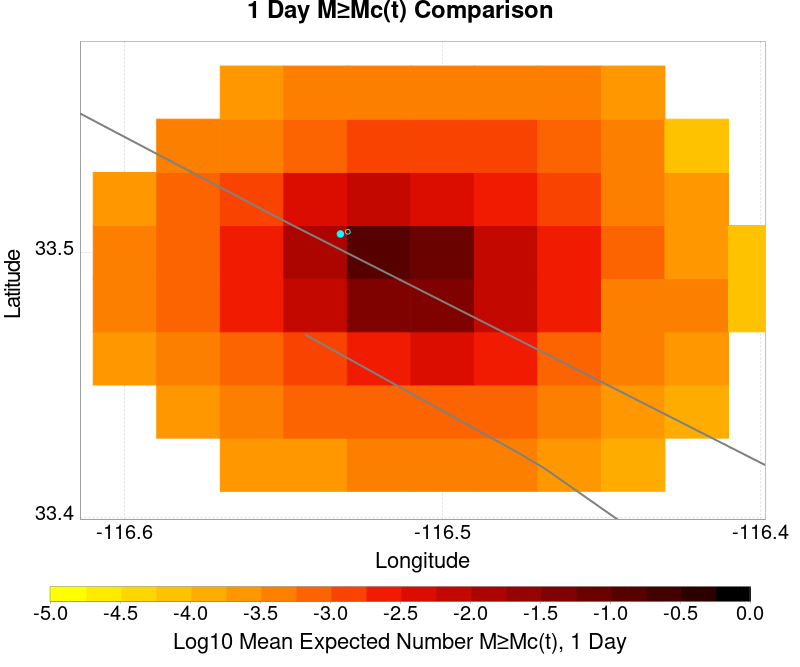 |  |  |  |  |
| Mean: 0.390, Actual: 2 | Mean: 1.704, Actual: 3 | Mean: 3.585, Actual: 4 | Mean: 3.635 | Mean: 7.900 | |
| M≥2.5 | 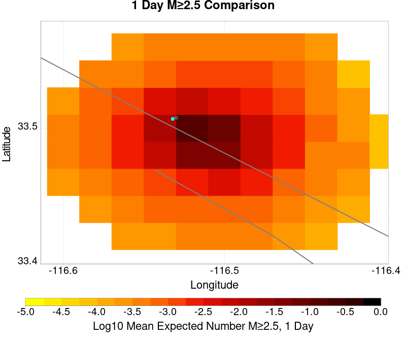 |  |  |  |  |
| Mean: 0.390, Actual: 2 | Mean: 1.704, Actual: 3 | Mean: 3.585, Actual: 4 | Mean: 3.635 | Mean: 7.900 | |
| M≥3 |  |  |  | 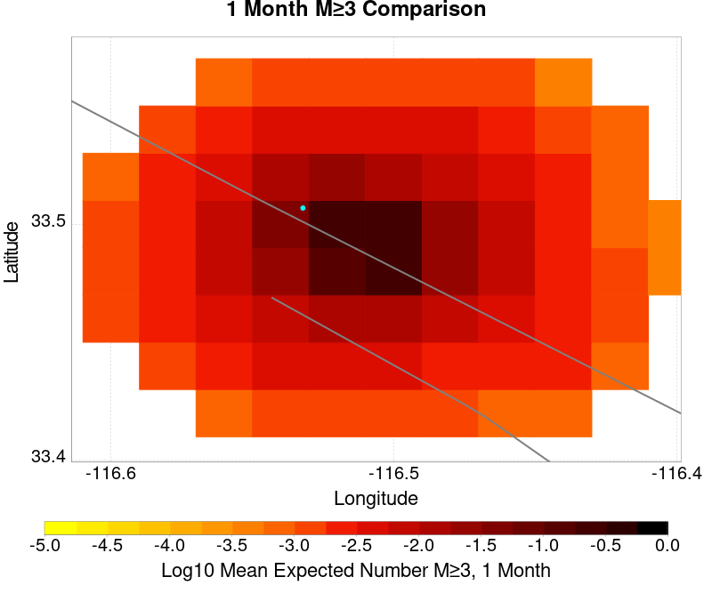 | 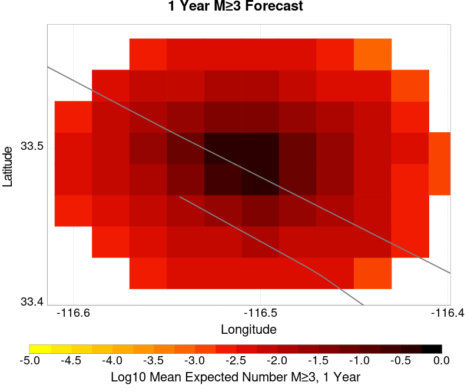 |
| Mean: 0.124, Actual: 1 | Mean: 0.535, Actual: 1 | Mean: 1.128, Actual: 1 | Mean: 1.144 | Mean: 2.493 | |
| M≥3.5 |  |  |  |  |  |
| Mean: 0.039, Actual: 0 | Mean: 0.168, Actual: 0 | Mean: 0.355, Actual: 0 | Mean: 0.360 | Mean: 0.787 | |
| M≥4 |  | 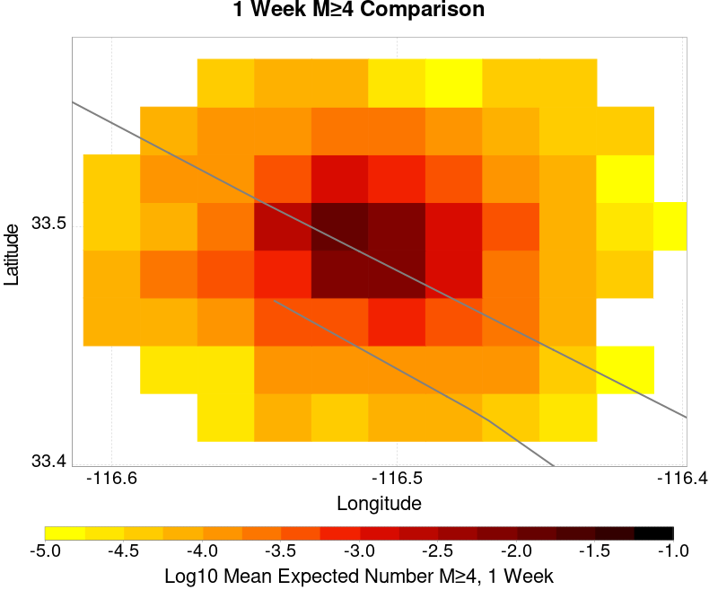 |  |  |  |
| Mean: 0.012, Actual: 0 | Mean: 0.053, Actual: 0 | Mean: 0.113, Actual: 0 | Mean: 0.115 | Mean: 0.251 | |
| M≥4.5 |  | 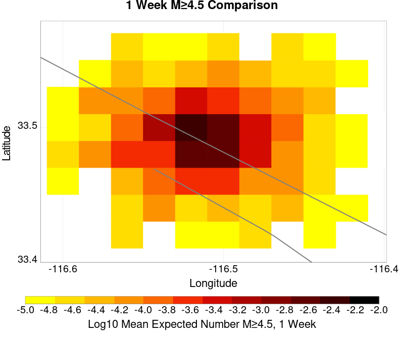 | 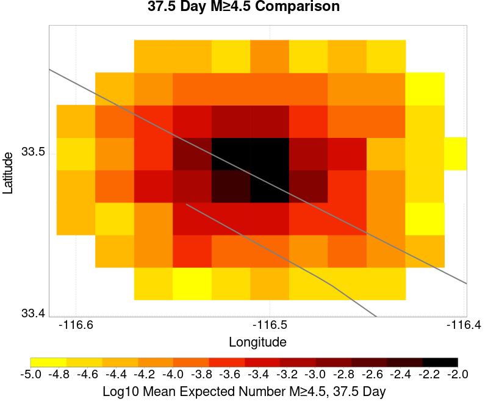 | 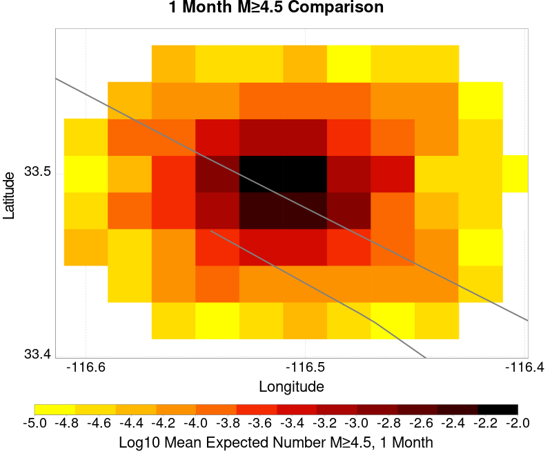 |  |
| Mean: 3.44E-3, Actual: 0 | Mean: 0.017, Actual: 0 | Mean: 0.036, Actual: 0 | Mean: 0.036 | Mean: 0.078 | |
| M≥5 |  |  |  |  | 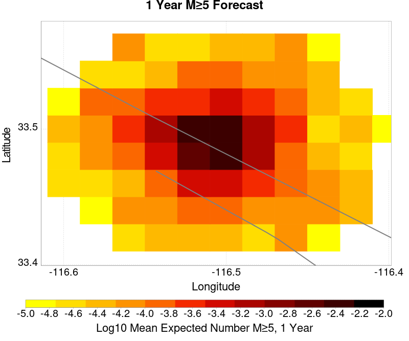 |
| Mean: 1.11E-3, Actual: 0 | Mean: 5.20E-3, Actual: 0 | Mean: 0.011, Actual: 0 | Mean: 0.011 | Mean: 0.024 | |
| M≥5.5 |  |  | 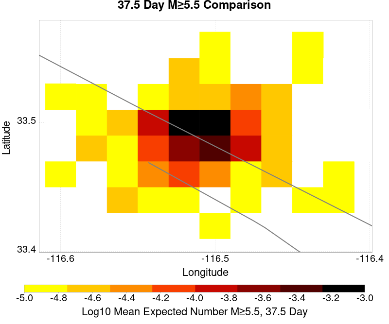 | 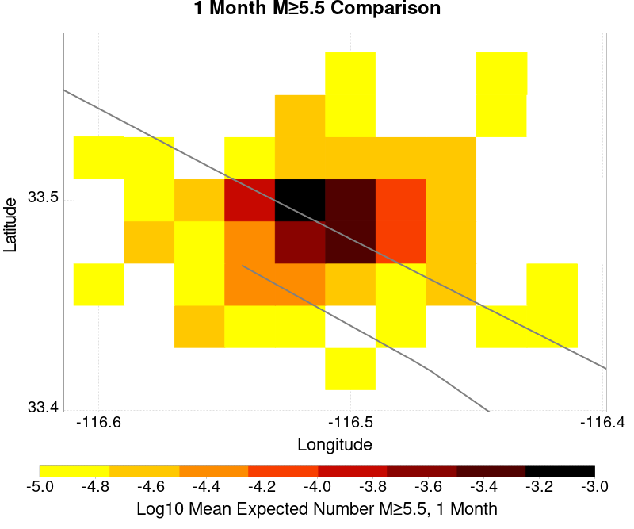 |  |
| Mean: 2.30E-4, Actual: 0 | Mean: 1.27E-3, Actual: 0 | Mean: 2.84E-3, Actual: 0 | Mean: 2.89E-3 | Mean: 6.59E-3 |
| M≥Mc(t) | M≥2.5 | M≥3 | M≥3.5 | M≥4 | M≥4.5 | M≥5 | M≥5.5 |
|---|---|---|---|---|---|---|---|
 |  |  |  |  |  |  | 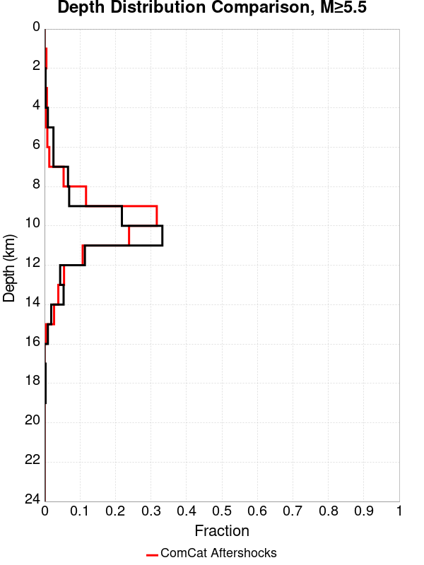 |
| Min Mag | 1 yr Triggered Ruptures (no spontaneous) | 10 yr Triggered Ruptures (no spontaneous) | 10 yr Triggered Ruptures (primary aftershocks only) |
|---|---|---|---|
| All Supra. Seis. | |||
| M≥6.5 | |||
| M≥7 | |||
| M≥7.5 | |||
| M≥8 |
First 10 of 27 with matching ruptures shown
| Parent Name | Triggered 10 Year Mean Count | Triggered 1 Day Prob | Triggered 1 Day 95% Conf | Triggered 1 Week Prob | Triggered 1 Week 95% Conf | Triggered 1 Month Prob | Triggered 1 Month 95% Conf | Triggered 1 Year Prob | Triggered 1 Year 95% Conf | Triggered 10 Year Prob | Triggered 10 Year 95% Conf | Triggered 10 Year Primary Mean Count |
|---|---|---|---|---|---|---|---|---|---|---|---|---|
| San Jacinto (Clark) rev | 2.4E-4 | 0.000 (0.00%) | [0.00% 0.00%] | 1.00E-5 (0.00%) | [0.00% 0.01%] | 5.00E-5 (0.01%) | [0.00% 0.01%] | 1.40E-4 (0.01%) | [0.01% 0.02%] | 2.40E-4 (0.02%) | [0.02% 0.04%] | 1.4E-4 |
| San Jacinto (Anza) rev | 1.8E-4 | 0.000 (0.00%) | [0.00% 0.00%] | 0.000 (0.00%) | [0.00% 0.00%] | 2.00E-5 (0.00%) | [0.00% 0.01%] | 8.00E-5 (0.01%) | [0.00% 0.02%] | 1.80E-4 (0.02%) | [0.01% 0.03%] | 1.1E-4 |
| San Jacinto (Stepovers Combined) | 5.0E-5 | 0.000 (0.00%) | [0.00% 0.00%] | 0.000 (0.00%) | [0.00% 0.00%] | 1.00E-5 (0.00%) | [0.00% 0.01%] | 1.00E-5 (0.00%) | [0.00% 0.01%] | 5.00E-5 (0.01%) | [0.00% 0.01%] | 3.0E-5 |
| Brawley (Seismic Zone) alt 1 | 3.0E-5 | 0.000 (0.00%) | [0.00% 0.00%] | 0.000 (0.00%) | [0.00% 0.00%] | 0.000 (0.00%) | [0.00% 0.00%] | 1.00E-5 (0.00%) | [0.00% 0.01%] | 3.00E-5 (0.00%) | [0.00% 0.01%] | 1.0E-5 |
| San Andreas (Coachella) rev | 3.0E-5 | 0.000 (0.00%) | [0.00% 0.00%] | 0.000 (0.00%) | [0.00% 0.00%] | 1.00E-5 (0.00%) | [0.00% 0.01%] | 2.00E-5 (0.00%) | [0.00% 0.01%] | 3.00E-5 (0.00%) | [0.00% 0.01%] | 2.0E-5 |
| Imperial | 2.0E-5 | 0.000 (0.00%) | [0.00% 0.00%] | 0.000 (0.00%) | [0.00% 0.00%] | 0.000 (0.00%) | [0.00% 0.00%] | 1.00E-5 (0.00%) | [0.00% 0.01%] | 2.00E-5 (0.00%) | [0.00% 0.01%] | 0.0 |
| San Andreas (Cholame) rev | 2.0E-5 | 0.000 (0.00%) | [0.00% 0.00%] | 0.000 (0.00%) | [0.00% 0.00%] | 1.00E-5 (0.00%) | [0.00% 0.01%] | 1.00E-5 (0.00%) | [0.00% 0.01%] | 1.00E-5 (0.00%) | [0.00% 0.01%] | 1.0E-5 |
| San Andreas (San Bernardino N) | 2.0E-5 | 0.000 (0.00%) | [0.00% 0.00%] | 0.000 (0.00%) | [0.00% 0.00%] | 1.00E-5 (0.00%) | [0.00% 0.01%] | 1.00E-5 (0.00%) | [0.00% 0.01%] | 1.00E-5 (0.00%) | [0.00% 0.01%] | 1.0E-5 |
| San Jacinto (Coyote Creek) | 2.0E-5 | 0.000 (0.00%) | [0.00% 0.00%] | 0.000 (0.00%) | [0.00% 0.00%] | 0.000 (0.00%) | [0.00% 0.00%] | 1.00E-5 (0.00%) | [0.00% 0.01%] | 2.00E-5 (0.00%) | [0.00% 0.01%] | 1.0E-5 |
| San Jacinto (San Jacinto Valley) rev | 2.0E-5 | 0.000 (0.00%) | [0.00% 0.00%] | 0.000 (0.00%) | [0.00% 0.00%] | 1.00E-5 (0.00%) | [0.00% 0.01%] | 1.00E-5 (0.00%) | [0.00% 0.01%] | 2.00E-5 (0.00%) | [0.00% 0.01%] | 2.0E-5 |
First 10 of 22 with matching ruptures shown
| Parent Name | Triggered 10 Year Mean Count | Triggered 1 Day Prob | Triggered 1 Day 95% Conf | Triggered 1 Week Prob | Triggered 1 Week 95% Conf | Triggered 1 Month Prob | Triggered 1 Month 95% Conf | Triggered 1 Year Prob | Triggered 1 Year 95% Conf | Triggered 10 Year Prob | Triggered 10 Year 95% Conf | Triggered 10 Year Primary Mean Count |
|---|---|---|---|---|---|---|---|---|---|---|---|---|
| San Jacinto (Clark) rev | 2.0E-4 | 0.000 (0.00%) | [0.00% 0.00%] | 0.000 (0.00%) | [0.00% 0.00%] | 4.00E-5 (0.00%) | [0.00% 0.01%] | 1.10E-4 (0.01%) | [0.01% 0.02%] | 2.00E-4 (0.02%) | [0.01% 0.03%] | 1.1E-4 |
| San Jacinto (Anza) rev | 1.7E-4 | 0.000 (0.00%) | [0.00% 0.00%] | 0.000 (0.00%) | [0.00% 0.00%] | 2.00E-5 (0.00%) | [0.00% 0.01%] | 8.00E-5 (0.01%) | [0.00% 0.02%] | 1.70E-4 (0.02%) | [0.01% 0.03%] | 1.0E-4 |
| San Jacinto (Stepovers Combined) | 5.0E-5 | 0.000 (0.00%) | [0.00% 0.00%] | 0.000 (0.00%) | [0.00% 0.00%] | 1.00E-5 (0.00%) | [0.00% 0.01%] | 1.00E-5 (0.00%) | [0.00% 0.01%] | 5.00E-5 (0.01%) | [0.00% 0.01%] | 3.0E-5 |
| San Andreas (Cholame) rev | 2.0E-5 | 0.000 (0.00%) | [0.00% 0.00%] | 0.000 (0.00%) | [0.00% 0.00%] | 1.00E-5 (0.00%) | [0.00% 0.01%] | 1.00E-5 (0.00%) | [0.00% 0.01%] | 1.00E-5 (0.00%) | [0.00% 0.01%] | 1.0E-5 |
| San Andreas (Coachella) rev | 2.0E-5 | 0.000 (0.00%) | [0.00% 0.00%] | 0.000 (0.00%) | [0.00% 0.00%] | 0.000 (0.00%) | [0.00% 0.00%] | 1.00E-5 (0.00%) | [0.00% 0.01%] | 2.00E-5 (0.00%) | [0.00% 0.01%] | 1.0E-5 |
| San Andreas (San Bernardino N) | 2.0E-5 | 0.000 (0.00%) | [0.00% 0.00%] | 0.000 (0.00%) | [0.00% 0.00%] | 1.00E-5 (0.00%) | [0.00% 0.01%] | 1.00E-5 (0.00%) | [0.00% 0.01%] | 1.00E-5 (0.00%) | [0.00% 0.01%] | 1.0E-5 |
| San Jacinto (Coyote Creek) | 2.0E-5 | 0.000 (0.00%) | [0.00% 0.00%] | 0.000 (0.00%) | [0.00% 0.00%] | 0.000 (0.00%) | [0.00% 0.00%] | 1.00E-5 (0.00%) | [0.00% 0.01%] | 2.00E-5 (0.00%) | [0.00% 0.01%] | 1.0E-5 |
| San Jacinto (San Jacinto Valley) rev | 2.0E-5 | 0.000 (0.00%) | [0.00% 0.00%] | 0.000 (0.00%) | [0.00% 0.00%] | 1.00E-5 (0.00%) | [0.00% 0.01%] | 1.00E-5 (0.00%) | [0.00% 0.01%] | 2.00E-5 (0.00%) | [0.00% 0.01%] | 2.0E-5 |
| Brawley (Seismic Zone) alt 1 | 1.0E-5 | 0.000 (0.00%) | [0.00% 0.00%] | 0.000 (0.00%) | [0.00% 0.00%] | 0.000 (0.00%) | [0.00% 0.00%] | 1.00E-5 (0.00%) | [0.00% 0.01%] | 1.00E-5 (0.00%) | [0.00% 0.01%] | 0.0 |
| Cleghorn | 1.0E-5 | 0.000 (0.00%) | [0.00% 0.00%] | 0.000 (0.00%) | [0.00% 0.00%] | 0.000 (0.00%) | [0.00% 0.00%] | 0.000 (0.00%) | [0.00% 0.00%] | 1.00E-5 (0.00%) | [0.00% 0.01%] | 0.0 |
First 10 of 22 with matching ruptures shown
| Parent Name | Triggered 10 Year Mean Count | Triggered 1 Day Prob | Triggered 1 Day 95% Conf | Triggered 1 Week Prob | Triggered 1 Week 95% Conf | Triggered 1 Month Prob | Triggered 1 Month 95% Conf | Triggered 1 Year Prob | Triggered 1 Year 95% Conf | Triggered 10 Year Prob | Triggered 10 Year 95% Conf | Triggered 10 Year Primary Mean Count |
|---|---|---|---|---|---|---|---|---|---|---|---|---|
| San Jacinto (Anza) rev | 1.4E-4 | 0.000 (0.00%) | [0.00% 0.00%] | 0.000 (0.00%) | [0.00% 0.00%] | 1.00E-5 (0.00%) | [0.00% 0.01%] | 5.00E-5 (0.01%) | [0.00% 0.01%] | 1.40E-4 (0.01%) | [0.01% 0.02%] | 8.0E-5 |
| San Jacinto (Clark) rev | 1.3E-4 | 0.000 (0.00%) | [0.00% 0.00%] | 0.000 (0.00%) | [0.00% 0.00%] | 1.00E-5 (0.00%) | [0.00% 0.01%] | 5.00E-5 (0.01%) | [0.00% 0.01%] | 1.30E-4 (0.01%) | [0.01% 0.02%] | 7.0E-5 |
| San Jacinto (Stepovers Combined) | 5.0E-5 | 0.000 (0.00%) | [0.00% 0.00%] | 0.000 (0.00%) | [0.00% 0.00%] | 1.00E-5 (0.00%) | [0.00% 0.01%] | 1.00E-5 (0.00%) | [0.00% 0.01%] | 5.00E-5 (0.01%) | [0.00% 0.01%] | 3.0E-5 |
| San Andreas (Cholame) rev | 2.0E-5 | 0.000 (0.00%) | [0.00% 0.00%] | 0.000 (0.00%) | [0.00% 0.00%] | 1.00E-5 (0.00%) | [0.00% 0.01%] | 1.00E-5 (0.00%) | [0.00% 0.01%] | 1.00E-5 (0.00%) | [0.00% 0.01%] | 1.0E-5 |
| San Jacinto (San Jacinto Valley) rev | 2.0E-5 | 0.000 (0.00%) | [0.00% 0.00%] | 0.000 (0.00%) | [0.00% 0.00%] | 1.00E-5 (0.00%) | [0.00% 0.01%] | 1.00E-5 (0.00%) | [0.00% 0.01%] | 2.00E-5 (0.00%) | [0.00% 0.01%] | 2.0E-5 |
| Brawley (Seismic Zone) alt 1 | 1.0E-5 | 0.000 (0.00%) | [0.00% 0.00%] | 0.000 (0.00%) | [0.00% 0.00%] | 0.000 (0.00%) | [0.00% 0.00%] | 1.00E-5 (0.00%) | [0.00% 0.01%] | 1.00E-5 (0.00%) | [0.00% 0.01%] | 0.0 |
| Cleghorn | 1.0E-5 | 0.000 (0.00%) | [0.00% 0.00%] | 0.000 (0.00%) | [0.00% 0.00%] | 0.000 (0.00%) | [0.00% 0.00%] | 0.000 (0.00%) | [0.00% 0.00%] | 1.00E-5 (0.00%) | [0.00% 0.01%] | 0.0 |
| Imperial | 1.0E-5 | 0.000 (0.00%) | [0.00% 0.00%] | 0.000 (0.00%) | [0.00% 0.00%] | 0.000 (0.00%) | [0.00% 0.00%] | 1.00E-5 (0.00%) | [0.00% 0.01%] | 1.00E-5 (0.00%) | [0.00% 0.01%] | 0.0 |
| North Frontal (East) | 1.0E-5 | 0.000 (0.00%) | [0.00% 0.00%] | 0.000 (0.00%) | [0.00% 0.00%] | 0.000 (0.00%) | [0.00% 0.00%] | 0.000 (0.00%) | [0.00% 0.00%] | 1.00E-5 (0.00%) | [0.00% 0.01%] | 0.0 |
| North Frontal (West) | 1.0E-5 | 0.000 (0.00%) | [0.00% 0.00%] | 0.000 (0.00%) | [0.00% 0.00%] | 0.000 (0.00%) | [0.00% 0.00%] | 0.000 (0.00%) | [0.00% 0.00%] | 1.00E-5 (0.00%) | [0.00% 0.01%] | 0.0 |
First 10 of 15 with matching ruptures shown
| Parent Name | Triggered 10 Year Mean Count | Triggered 1 Day Prob | Triggered 1 Day 95% Conf | Triggered 1 Week Prob | Triggered 1 Week 95% Conf | Triggered 1 Month Prob | Triggered 1 Month 95% Conf | Triggered 1 Year Prob | Triggered 1 Year 95% Conf | Triggered 10 Year Prob | Triggered 10 Year 95% Conf | Triggered 10 Year Primary Mean Count |
|---|---|---|---|---|---|---|---|---|---|---|---|---|
| San Jacinto (Anza) rev | 2.0E-5 | 0.000 (0.00%) | [0.00% 0.00%] | 0.000 (0.00%) | [0.00% 0.00%] | 1.00E-5 (0.00%) | [0.00% 0.01%] | 1.00E-5 (0.00%) | [0.00% 0.01%] | 2.00E-5 (0.00%) | [0.00% 0.01%] | 2.0E-5 |
| San Jacinto (San Jacinto Valley) rev | 2.0E-5 | 0.000 (0.00%) | [0.00% 0.00%] | 0.000 (0.00%) | [0.00% 0.00%] | 1.00E-5 (0.00%) | [0.00% 0.01%] | 1.00E-5 (0.00%) | [0.00% 0.01%] | 2.00E-5 (0.00%) | [0.00% 0.01%] | 2.0E-5 |
| San Jacinto (Stepovers Combined) | 2.0E-5 | 0.000 (0.00%) | [0.00% 0.00%] | 0.000 (0.00%) | [0.00% 0.00%] | 1.00E-5 (0.00%) | [0.00% 0.01%] | 1.00E-5 (0.00%) | [0.00% 0.01%] | 2.00E-5 (0.00%) | [0.00% 0.01%] | 2.0E-5 |
| San Andreas (Big Bend) | 1.0E-5 | 0.000 (0.00%) | [0.00% 0.00%] | 0.000 (0.00%) | [0.00% 0.00%] | 1.00E-5 (0.00%) | [0.00% 0.01%] | 1.00E-5 (0.00%) | [0.00% 0.01%] | 1.00E-5 (0.00%) | [0.00% 0.01%] | 1.0E-5 |
| San Andreas (Carrizo) rev | 1.0E-5 | 0.000 (0.00%) | [0.00% 0.00%] | 0.000 (0.00%) | [0.00% 0.00%] | 1.00E-5 (0.00%) | [0.00% 0.01%] | 1.00E-5 (0.00%) | [0.00% 0.01%] | 1.00E-5 (0.00%) | [0.00% 0.01%] | 1.0E-5 |
| San Andreas (Cholame) rev | 1.0E-5 | 0.000 (0.00%) | [0.00% 0.00%] | 0.000 (0.00%) | [0.00% 0.00%] | 1.00E-5 (0.00%) | [0.00% 0.01%] | 1.00E-5 (0.00%) | [0.00% 0.01%] | 1.00E-5 (0.00%) | [0.00% 0.01%] | 1.0E-5 |
| San Andreas (Mojave N) | 1.0E-5 | 0.000 (0.00%) | [0.00% 0.00%] | 0.000 (0.00%) | [0.00% 0.00%] | 1.00E-5 (0.00%) | [0.00% 0.01%] | 1.00E-5 (0.00%) | [0.00% 0.01%] | 1.00E-5 (0.00%) | [0.00% 0.01%] | 1.0E-5 |
| San Andreas (Mojave S) | 1.0E-5 | 0.000 (0.00%) | [0.00% 0.00%] | 0.000 (0.00%) | [0.00% 0.00%] | 1.00E-5 (0.00%) | [0.00% 0.01%] | 1.00E-5 (0.00%) | [0.00% 0.01%] | 1.00E-5 (0.00%) | [0.00% 0.01%] | 1.0E-5 |
| San Andreas (San Bernardino N) | 1.0E-5 | 0.000 (0.00%) | [0.00% 0.00%] | 0.000 (0.00%) | [0.00% 0.00%] | 1.00E-5 (0.00%) | [0.00% 0.01%] | 1.00E-5 (0.00%) | [0.00% 0.01%] | 1.00E-5 (0.00%) | [0.00% 0.01%] | 1.0E-5 |
| San Jacinto (Borrego) | 1.0E-5 | 0.000 (0.00%) | [0.00% 0.00%] | 0.000 (0.00%) | [0.00% 0.00%] | 0.000 (0.00%) | [0.00% 0.00%] | 0.000 (0.00%) | [0.00% 0.00%] | 1.00E-5 (0.00%) | [0.00% 0.01%] | 1.0E-5 |
First 10 of 11 with matching ruptures shown
| Parent Name | Triggered 10 Year Mean Count | Triggered 1 Day Prob | Triggered 1 Day 95% Conf | Triggered 1 Week Prob | Triggered 1 Week 95% Conf | Triggered 1 Month Prob | Triggered 1 Month 95% Conf | Triggered 1 Year Prob | Triggered 1 Year 95% Conf | Triggered 10 Year Prob | Triggered 10 Year 95% Conf | Triggered 10 Year Primary Mean Count |
|---|---|---|---|---|---|---|---|---|---|---|---|---|
| San Andreas (Big Bend) | 1.0E-5 | 0.000 (0.00%) | [0.00% 0.00%] | 0.000 (0.00%) | [0.00% 0.00%] | 1.00E-5 (0.00%) | [0.00% 0.01%] | 1.00E-5 (0.00%) | [0.00% 0.01%] | 1.00E-5 (0.00%) | [0.00% 0.01%] | 1.0E-5 |
| San Andreas (Carrizo) rev | 1.0E-5 | 0.000 (0.00%) | [0.00% 0.00%] | 0.000 (0.00%) | [0.00% 0.00%] | 1.00E-5 (0.00%) | [0.00% 0.01%] | 1.00E-5 (0.00%) | [0.00% 0.01%] | 1.00E-5 (0.00%) | [0.00% 0.01%] | 1.0E-5 |
| San Andreas (Cholame) rev | 1.0E-5 | 0.000 (0.00%) | [0.00% 0.00%] | 0.000 (0.00%) | [0.00% 0.00%] | 1.00E-5 (0.00%) | [0.00% 0.01%] | 1.00E-5 (0.00%) | [0.00% 0.01%] | 1.00E-5 (0.00%) | [0.00% 0.01%] | 1.0E-5 |
| San Andreas (Mojave N) | 1.0E-5 | 0.000 (0.00%) | [0.00% 0.00%] | 0.000 (0.00%) | [0.00% 0.00%] | 1.00E-5 (0.00%) | [0.00% 0.01%] | 1.00E-5 (0.00%) | [0.00% 0.01%] | 1.00E-5 (0.00%) | [0.00% 0.01%] | 1.0E-5 |
| San Andreas (Mojave S) | 1.0E-5 | 0.000 (0.00%) | [0.00% 0.00%] | 0.000 (0.00%) | [0.00% 0.00%] | 1.00E-5 (0.00%) | [0.00% 0.01%] | 1.00E-5 (0.00%) | [0.00% 0.01%] | 1.00E-5 (0.00%) | [0.00% 0.01%] | 1.0E-5 |
| San Andreas (San Bernardino N) | 1.0E-5 | 0.000 (0.00%) | [0.00% 0.00%] | 0.000 (0.00%) | [0.00% 0.00%] | 1.00E-5 (0.00%) | [0.00% 0.01%] | 1.00E-5 (0.00%) | [0.00% 0.01%] | 1.00E-5 (0.00%) | [0.00% 0.01%] | 1.0E-5 |
| San Jacinto (Anza) rev | 1.0E-5 | 0.000 (0.00%) | [0.00% 0.00%] | 0.000 (0.00%) | [0.00% 0.00%] | 1.00E-5 (0.00%) | [0.00% 0.01%] | 1.00E-5 (0.00%) | [0.00% 0.01%] | 1.00E-5 (0.00%) | [0.00% 0.01%] | 1.0E-5 |
| San Jacinto (Clark) rev | 1.0E-5 | 0.000 (0.00%) | [0.00% 0.00%] | 0.000 (0.00%) | [0.00% 0.00%] | 1.00E-5 (0.00%) | [0.00% 0.01%] | 1.00E-5 (0.00%) | [0.00% 0.01%] | 1.00E-5 (0.00%) | [0.00% 0.01%] | 1.0E-5 |
| San Jacinto (San Bernardino) | 1.0E-5 | 0.000 (0.00%) | [0.00% 0.00%] | 0.000 (0.00%) | [0.00% 0.00%] | 1.00E-5 (0.00%) | [0.00% 0.01%] | 1.00E-5 (0.00%) | [0.00% 0.01%] | 1.00E-5 (0.00%) | [0.00% 0.01%] | 1.0E-5 |
| San Jacinto (San Jacinto Valley) rev | 1.0E-5 | 0.000 (0.00%) | [0.00% 0.00%] | 0.000 (0.00%) | [0.00% 0.00%] | 1.00E-5 (0.00%) | [0.00% 0.01%] | 1.00E-5 (0.00%) | [0.00% 0.01%] | 1.00E-5 (0.00%) | [0.00% 0.01%] | 1.0E-5 |
The first 5 sections (sorted by trigger rate) are plotted below. All fault MPDs are available here
| 1 Week | 1 Month | 1 Year | 10 Year |
|---|---|---|---|
 |  |  |  |
 |  |  | |
 |  |  |  |
 |  |  | |
| 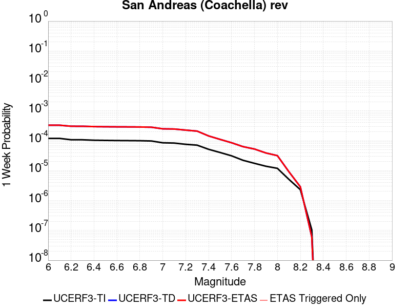 |  | 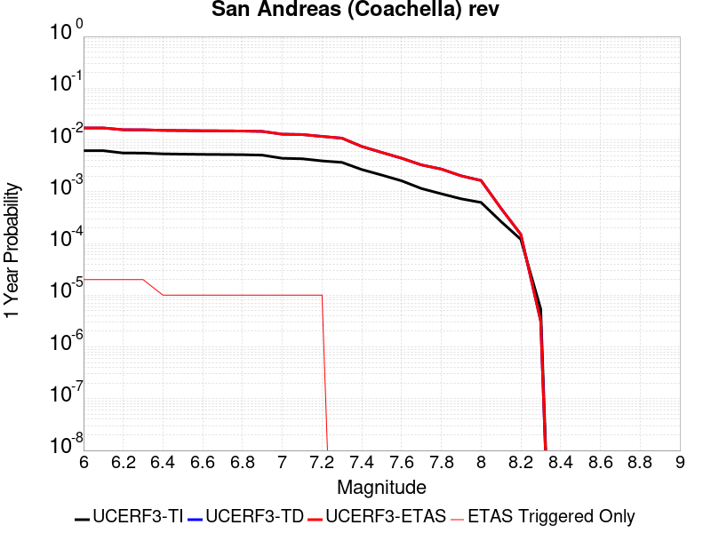 |  |
| Min Mag | Triggered Ruptures (no spontaneous) | Triggered Ruptures (primary aftershocks only) |
|---|---|---|
| M≥2.5 | ||
| M≥5 |  | |
| M≥6 | ||
| M≥7 |
{
"numSimulations": 100000,
"duration": 10.0,
"startTimeMillis": 1586368088968,
"includeSpontaneous": false,
"randomSeed": 1586368088193,
"binaryOutput": true,
"binaryOutputFilters": [
{
"prefix": "results_complete",
"descendantsOnly": false
},
{
"prefix": "results_m5_preserve_chain",
"minMag": 5.0,
"preserveChainBelowMag": true,
"descendantsOnly": false
}
],
"forceRecalc": false,
"simulationName": "ComCat M4.87 (ci39126079), 4.7 Days After, Point Sources, kCOV\u003d1.5",
"numRetries": 3,
"outputDir": "${ETAS_SIM_DIR}/2020_04_08-ComCatM4p87_ci39126079_4p7DaysAfter_PointSources_kCOV1p5",
"treatTriggerCatalogAsSpontaneous": false,
"triggerRuptures": [
{
"occurrenceTimeMillis": 1585965198920,
"comcatEventID": "ci39126079",
"mag": 4.87,
"latitude": 33.4895,
"longitude": -116.50633330000001,
"depth": 10.45
},
{
"occurrenceTimeMillis": 1585965262570,
"comcatEventID": "ci39126087",
"mag": 3.76,
"latitude": 33.49316670000001,
"longitude": -116.50500000000001,
"depth": 10.31
},
{
"occurrenceTimeMillis": 1585965335800,
"comcatEventID": "ci39126103",
"mag": 3.07,
"latitude": 33.4801667,
"longitude": -116.49033329999999,
"depth": 9.21
},
{
"occurrenceTimeMillis": 1585965417670,
"comcatEventID": "ci39126135",
"mag": 2.57,
"latitude": 33.496,
"longitude": -116.50666669999998,
"depth": 10.78
},
{
"occurrenceTimeMillis": 1585965900170,
"comcatEventID": "ci39126263",
"mag": 3.66,
"latitude": 33.4946667,
"longitude": -116.5153333,
"depth": 10.28
},
{
"occurrenceTimeMillis": 1585966584880,
"comcatEventID": "ci39126455",
"mag": 2.55,
"latitude": 33.4966667,
"longitude": -116.5198333,
"depth": 10.26
},
{
"occurrenceTimeMillis": 1585969163280,
"comcatEventID": "ci39126951",
"mag": 3.11,
"latitude": 33.5011667,
"longitude": -116.51900000000002,
"depth": 10.37
},
{
"occurrenceTimeMillis": 1585973242120,
"comcatEventID": "ci39127679",
"mag": 3.6,
"latitude": 33.4913333,
"longitude": -116.51883329999998,
"depth": 9.62
},
{
"occurrenceTimeMillis": 1585977155150,
"comcatEventID": "ci39128103",
"mag": 3.46,
"latitude": 33.4921667,
"longitude": -116.51183330000002,
"depth": 9.85
},
{
"occurrenceTimeMillis": 1586000957950,
"comcatEventID": "ci39129687",
"mag": 2.81,
"latitude": 33.4978333,
"longitude": -116.5191667,
"depth": 9.96
},
{
"occurrenceTimeMillis": 1586104067340,
"comcatEventID": "ci39134127",
"mag": 2.62,
"latitude": 33.5071667,
"longitude": -116.51900000000002,
"depth": 13.14
},
{
"occurrenceTimeMillis": 1586120864910,
"comcatEventID": "ci39134871",
"mag": 3.49,
"latitude": 33.5036667,
"longitude": -116.5278333,
"depth": 10.53
},
{
"occurrenceTimeMillis": 1586123663660,
"comcatEventID": "ci39135327",
"mag": 2.7,
"latitude": 33.5015,
"longitude": -116.52599999999998,
"depth": 11.1
},
{
"occurrenceTimeMillis": 1586126089700,
"comcatEventID": "ci39135567",
"mag": 2.64,
"latitude": 33.498,
"longitude": -116.496,
"depth": 12.65
},
{
"occurrenceTimeMillis": 1586126238820,
"comcatEventID": "ci39135575",
"mag": 3.5,
"latitude": 33.4961667,
"longitude": -116.49616669999999,
"depth": 13.25
},
{
"occurrenceTimeMillis": 1586128318930,
"comcatEventID": "ci39135751",
"mag": 2.6,
"latitude": 33.4976667,
"longitude": -116.5215,
"depth": 10.39
},
{
"occurrenceTimeMillis": 1586305849230,
"comcatEventID": "ci39141591",
"mag": 3.54,
"latitude": 33.4985,
"longitude": -116.52533329999999,
"depth": 9.98
},
{
"occurrenceTimeMillis": 1586306156820,
"comcatEventID": "ci39141695",
"mag": 3.27,
"latitude": 33.500666700000004,
"longitude": -116.5236667,
"depth": 10.28
},
{
"occurrenceTimeMillis": 1586306216480,
"comcatEventID": "ci39141711",
"mag": 2.55,
"latitude": 33.4941667,
"longitude": -116.51450000000001,
"depth": 8.71
},
{
"occurrenceTimeMillis": 1586307614260,
"comcatEventID": "ci39141967",
"mag": 3.22,
"latitude": 33.4981667,
"longitude": -116.5228333,
"depth": 10.27
},
{
"occurrenceTimeMillis": 1586314417320,
"comcatEventID": "ci39142391",
"mag": 2.64,
"latitude": 33.499,
"longitude": -116.522,
"depth": 10.37
},
{
"occurrenceTimeMillis": 1586318469210,
"comcatEventID": "ci39142551",
"mag": 2.6,
"latitude": 33.50183330000001,
"longitude": -116.5208333,
"depth": 10.01
},
{
"occurrenceTimeMillis": 1586318629240,
"comcatEventID": "ci39142559",
"mag": 2.63,
"latitude": 33.4988333,
"longitude": -116.5225,
"depth": 10.38
}
],
"cacheDir": "${ETAS_LAUNCHER}/inputs/cache_fm3p1_ba",
"fssFile": "${ETAS_LAUNCHER}/inputs/2013_05_10-ucerf3p3-production-10runs_COMPOUND_SOL_FM3_1_SpatSeisU3_MEAN_BRANCH_AVG_SOL.zip",
"probModel": "FULL_TD",
"applySubSeisForSupraNucl": true,
"totRateScaleFactor": 1.14,
"gridSeisCorr": true,
"timeIndependentERF": false,
"griddedOnly": false,
"imposeGR": false,
"includeIndirectTriggering": true,
"gridSeisDiscr": 0.1,
"catalogCompletenessModel": "RELAXED",
"etas_k_cov": 1.5,
"configCommand": "u3etas_comcat_event_config_builder.sh --event-id ci39126079 --radius 10 --mag-complete 2.5 --num-simulations 100000 --days-before 7 --end-now --etas-k-cov 1.5 --finite-surf-shakemap --finite-surf-shakemap-min-mag 4.5 --hpc-site USC_HPC --nodes 32 --hours 24",
"configTime": 1586368088193,
"comcatMetadata": {
"region": {
"centerLatitude": 33.4895,
"centerLongitude": -116.50633330000001,
"radius": 10.0
},
"eventID": "ci39126079",
"minDepth": -10.0,
"maxDepth": 24.0,
"minMag": 2.5,
"startTime": 1585360398920,
"endTime": 1586368087968,
"magComplete": 2.5
}
}